СП 129.13330.2019 «Наружные сети и сооружения водоснабжения и»
О документе: разработчики, утверждение, регистрация, ключевые слова
1 ИСПОЛНИТЕЛИ -Акционерное общество «НПО Стеклопластик» совместно с Автономной некоммерческой организацией «Центр нормирования, стандартизации и сертификации композитов» и Общество с ограниченной ответственностью «НВК Системные инновации» при участии Объединения юридических лиц «Союз производителей композитов»
2 ВНЕСЕН Техническим комитетом по стандартизации ТК 465 «Строительство»
3 ПОДГОТОВЛЕН к утверждению Департаментом градостроительной деятельности и архитектуры Министерства строительства и жилищнокоммунального хозяйства Российской Федерации (Минстрой России)
4 УТВЕРЖДЕН приказом Министерства строительства и жилищнокоммунального хозяйства Российской Федерации от 31 декабря 2019 г. № 925/пр и введен в действие с 1 июля 2020 г.
5 ЗАРЕГИСТРИРОВАН Федеральным агентством по техническому регулированию и метрологии (Росстандарт). Пересмотр СП 129.13330.2011 «СНиП 3.05.04-85* Наружные сети и сооружения водоснабжения и канализации»
Информация об изменениях к настоящему своду правил, а также тексты изменений и поправок размещаются в информационной системе общего пользования -на официальном сайте Министерства строительства и жилищно-коммунального хозяйства Российской Федерации в сети Интернет
© Минстрой России, 2019
Настоящий нормативный документ не может быть полностью или частично воспроизведен, тиражирован и распространен в качестве официального издания на территории Российской Федерации без разрешения Минстроя России
.. 78
Дата введения - 2020-07-01
УДК [69+628.1/.2] (083.74)
ОКС 93.025
93.030
Ключевые слова: наружные сети, сооружения, водоснабжение, канализация, трубы и детали трубопроводов из реактопластов, армированных стекловолокном, стеклокомпозитные трубы и фитинги, полимерные композиты
| Руководитель организации-разработчика: Генеральный директор АО «НПО Стеклопластик» | А.Н. Трофимов |
|---|---|
| Руководитель разработки: Генеральный директор АО «НПО Стеклопластик» | А.Н. Трофимов |
| Исполнитель: Директор НПК «Композит» АО «НПО Стеклопластик» | А.Ф. Косолапов |
| СОИСПОЛНИТЕЛИ | |
| Руководитель организации-разработчика: Исполнительный директор Союзкомпозит | С.Ю. Ветохин |
| Руководитель разработки: Исполнительный директор Союзкомпозит | С.Ю. Ветохин |
| Исполнитель: Руководитель департамента технического регулирования и метрологии Союзкомпозит | А.В. Гералтовский |
Введение
Настоящий свод правил разработан в соответствии с Федеральным законом от 30 декабря 2015 г. № 384-ФЗ «Технический регламент о безопасности зданий и сооружений».
Актуализация выполнена Акционерным обществом «НПО Стеклопластик» совместно с Автономной некоммерческой организацией «Центр нормирования, стандартизации и сертификации композитов» и Обществом с ограниченной ответственностью «НВК Системные инновации» при участии Объединения юридических лиц «Союз производителей композитов» (ответственные исполнители: канд. техн. наук А.Ф. Косолапов , В.А. Антошин, С.Ю. Ветохин, А.В. Гералтовский, д-р техн. наук С.В. Бухаров, А.С. Лебедев).
External water supply and sewage networks and structures
1Область применения
Настоящий свод правил распространяется на наружные сети и сооружения водоснабжения и канализации и устанавливает требования, которые должны соблюдаться при проектировании вновь строящихся и реконструируемых наружных сетей и сооружений водоснабжения и канализации населенных пунктов и промышленных предприятий.
2Нормативные ссылки
В настоящем своде правил использованы нормативные ссылки на следующие документы:
ГОСТ 2405-88 Манометры, вакуумметры, мановакуумметры, напоромеры, тягомеры и тягонапоромеры. Общие технические условия
ГОСТ 6019-83 Счетчики холодной воды крыльчатые. Общие технические условия
ГОСТ 6718-93 (ИСО 2120-72, ИСО 5173-72) Хлор жидкий. Технические условия
Издание официальное
ГОСТ 6996-66 (ИСО 4136-89, ИСО 5173-81, ИСО 5177-81) Сварные соединения. Методы определения механических свойств
ГОСТ 7512-82 Контроль неразрушающий. Соединения сварные. Радиографический метод
ГОСТ 9583-75 Трубы чугунные напорные, изготовленные методами центробежного и полунепрерывного литья. Технические условия
ГОСТ 11086-76 Гипохлорит натрия. Технические условия
ГОСТ 16037-80 Соединения сварные стальных трубопроводов.
Основные типы, конструктивные элементы и размеры
ГОСТ 23055-78 Контроль неразрушающий. Сварка металлов плавлением. Классификация сварных соединений по результатам радиографического контроля
ГОСТ 25263-82 Кальция гипохлорит нейтральный. Технические условия
ГОСТ 31861-2012 Вода. Общие требования к отбору проб
ГОСТ 31942-2012 Вода. Отбор проб для микробиологического анализа
ГОСТ Р 51232-98 Вода питьевая. Общие требования к организации и методам контроля качества
ГОСТ Р 53201-2008 Трубы стеклопластиковые и фитинги. Технические условия
ГОСТ Р 54560-2015 Трубы и детали трубопроводов из реактопластов, армированных стекловолокном, для водоснабжения, водоотведения, дренажа и канализации. Технические условия
ГОСТ Р 54562-2011 Известь хлорная. Технические условия
ГОСТ Р 55068-2012 Трубы и детали трубопроводов из композитных материалов на основе эпоксидных связующих, армированных стекло- и базальтоволокнами. Технические условия
ГОСТ Р 55724-2013 Контроль неразрушающий. Соединения сварные. Методы ультразвуковые
СП 28.13330.2017 «СНиП 2.03.11-85 Защита строительных конструкций от коррозии» (с изменениями № 1, № 2)
СП 31.13330.2012 «СНиП 2.04.02-84* Водоснабжение. Наружные сети и сооружения» (с изменениями № 1, № 2, № 3, № 4, № 5)
СП 32.13330.2018 «СНиП 2.04.03-85 Канализация. Наружные сети и сооружения» (с изменением № 1)
СП 36.13330.2012 «СНиП 2.05.06-85* Магистральные трубопроводы» (с изменениями № 1, № 2)
СП 45.13330.2017 «СНиП 3.02.01-87 Земляные сооружения, основания и фундаменты» (с изменениями № 1, № 2)
СП 48.13330.2019 «СНиП 12-01-2004 Организация строительства»
СП 68.13330.2017 «СНиП 3.01.04-87 Приемка в эксплуатацию законченных строительством объектов» (с изменением № 1)
СП 70.13330.2012 «СНиП 3.03.01-87 Несущие и ограждающие конструкции» (с изменениями № 1, № 3)
СП 72.13330.2016 «СНиП 3.04.03-85 Защита строительных конструкций и сооружений от коррозии» (с изменением № 1)
СП 86.13330.2014 «СНиП III-42-80* Магистральные трубопроводы» (с изменениями № 1, № 2)
СП 126.13330.2017 «СНиП 3.01.03-84 Геодезические работы в строительстве»
Примечание - При пользовании настоящим сводом правил целесообразно проверить действие ссылочных документов в информационной системе общего пользования -на официальном сайте федерального органа исполнительной власти в сфере стандартизации в сети Интернет или по ежегодному информационному указателю «Национальные стандарты», который опубликован по состоянию на 1 января текущего года, и по выпускам ежемесячного информационного указателя «Национальные стандарты» за текущий год. Если заменен ссылочный документ, на который дана недатированная ссылка, то рекомендуется использовать действующую версию этого документа с учетом всех внесенных в данную версию изменений. Если заменен ссылочный документ, на который дана датированная ссылка, то рекомендуется использовать версию этого документа с указанным выше годом утверждения (принятия). Если после утверждения настоящего свода правил в ссылочный документ, на который дана датированная ссылка, внесено изменение, затрагивающее положение, на которое дана ссылка, то это положение рекомендуется применять без учета данного изменения. Если ссылочный документ отменен без замены, то положение, в котором дана ссылка на него, рекомендуется применять в части, не затрагивающей эту ссылку. Сведения о действии сводов правил целесообразно проверить в Федеральном информационном фонде стандартов.
3Термины и определения
В настоящем своде правил применены термины по СП 31.13330 и СП 32.13330 с соответствующими определениями.
4Общие положения
5Земляные работы
Земляные работы и работы по устройству оснований при строительстве трубопроводов и сооружений водоснабжения и канализации должны выполняться в соответствии с требованиями СП 45.13330.
6Монтаж трубопроводов 6.1 Общие требования
СП 129.13330.2019 захваты, гибкие полотенца и другие средства, исключающие повреждение этих покрытий.
Допустимое значение отклонения от формы круга по горизонтали должно составлять не более 1/4 диаметра трубопровода, но не более 50 мм в каждую сторону. Отклонения от правильной формы круга по вертикали не допускаются.
- фланцевые соединения должны быть установлены перпендикулярно к оси трубы;
- плоскости соединяемых фланцев должны быть ровными, гайки болтов должны быть расположены на одной стороне соединения; затяжку болтов следует выполнять равномерно крест-накрест;
- устранение перекосов фланцев установкой скошенных прокладок или подтягиванием болтов не допускается;
- сваривание стыков смежных с фланцевым соединением следует выполнять лишь после равномерной затяжки всех болтов на фланцах.
Для стеклокомпозитных и полимерных труб не требуется устройство дополнительной защиты от коррозии.
6.2Стальные трубопроводы
При наложении корневого шва прихватки должны быть полностью переварены. Применяемые для прихваток электроды или сварочная проволока должны быть тех же марок, что и для сварки основного шва.
- если он впервые приступил к сварке трубопроводов или имел перерыв в работе свыше 6 мес;
- если сварка труб осуществляется из новых марок сталей, с применением новых марок сварочных материалов (электродов, сварочной проволоки, флюсов) или с применением новых типов сварочного оборудования.
На трубах диаметром 529 мм и более разрешается сваривать половину допускного стыка. Допускной стык подвергается:
- внешнему осмотру, при котором сварной шов должен удовлетворять требованиям настоящего раздела и ГОСТ 16037;
- радиографическому контролю в соответствии с ГОСТ 7512;
- механическим испытаниям на разрыв и изгиб в соответствии с ГОСТ 6996.
В случае неудовлетворительных результатов проверки допускного стыка производятся сварка и повторный контроль двух других допускных стыков. В случае получения при повторном контроле неудовлетворительных результатов хотя бы на одном из стыков сварщик признается не выдержавшим испытаний и может быть допущен к сварке трубопровода только после дополнительного обучения и повторных испытаний.
- до минус 20 °С - при применении труб из углеродистой стали с содержанием углерода не более 0,24 % (независимо от толщины стенок труб), а также труб из низколегированной стали со стенками толщиной не более 10 мм;
- до минус 10 °С - при применении труб из углеродистой стали с содержанием углерода свыше 0,24 %, труб из низколегированной стали со стенками толщиной свыше 10 мм. При температуре наружного воздуха ниже вышеуказанных пределов сварочные работы следует производить с подогревом в специальных кабинах, в которых температуру воздуха следует поддерживать не ниже вышеуказанной, или осуществлять подогрев на открытом воздухе концов свариваемых труб на длину не менее 200 мм до температуры не ниже 200 °С.
После окончания сварки необходимо обеспечивать постепенное понижение температуры стыков и прилегающих к ним зон труб путем укрывания их после сварки хризотиловым полотенцем или другим способом.
СП 129.13330.2019
- операционный контроль в процессе сборки и сварки трубопровода в соответствии с СП 48.13330;
- проверку сплошности сварных стыков с выявлением внутренних дефектов одним из неразрушающих (физических) методов контроля радиографическим (рентгено- или гаммаграфическим) по ГОСТ 7512 или ультразвуковым по ГОСТ Р 55724.
Применение ультразвукового метода допускается только в сочетании с радиографическим, которым должно быть проверено не менее 10 % общего числа стыков, подлежащих контролю.
СП 129.13330.2019
Качество сварного шва по результатам внешнего осмотра считается удовлетворительным, если не обнаружено:
- трещин в шве и прилегающей зоне;
- отступлений от допускаемых размеров и формы шва;
- подрезов, западаний между валиками, наплывов, прожогов, незаваренных кратеров и выходящих на поверхность пор, непроваров или провисаний в корне шва (при осмотре стыка изнутри трубы);
- смещений кромок труб, превышающих допускаемые размеры.
Стыки, не удовлетворяющие перечисленным требованиям, подлежат исправлению или удалению и повторному контролю их качества.
- до 1 МПа - в объеме не менее 2 % (но не менее одного стыка на каждого сварщика);
- от 1 до 2 МПа - в объеме не менее 5 % (но не менее двух стыков на каждого сварщика);
- свыше 2 МПа - в объеме не менее 10 % (но не менее трех стыков на каждого сварщика).
- расстояния между осями крайних путей и по 40 м от них в каждую сторону - для железных дорог;
- ширины насыпи по подошве или выемки по верху и по 25 м от них в каждую сторону - для автомобильных дорог;
- в границах подводного перехода, определяемых СП 36.13330.2012 (раздел 10) - для водных преград;
- ширины пересекаемого сооружения, включая его водоотводящие устройства плюс не менее чем по 4 м в каждую сторону от крайних границ пересекаемого сооружения- для других инженерных коммуникаций.
При проверке сварных швов радиографическим методом допустимыми дефектами считаются:
- поры и включения, размеры которых не превышают максимально допустимых по ГОСТ 23055 для сварных соединений 7-го класса;
- непровары, вогнутость и превышение проплава в корне шва, выполненного электродуговой сваркой без подкладного кольца, высота (глубина) которых не превышает 10 % номинальной толщины стенки, а суммарная длина - 1/3 внутреннего периметра соединения.
Исправление дефектов в стыках следует производить дуговой сваркой.
Подрезы должны исправляться наплавкой ниточных валиков высотой от 2 до 3 мм. Трещины длиной менее 50 мм засверливаются по концам, вырубаются, тщательно зачищаются и завариваются в несколько слоев.
6.3Стеклокомпозитные трубопроводы
- муфтовые соединения;
- раструбные соединения;
- муфтовые блокирующие соединения;
- раструбные блокирующие соединения;
- муфтовые резьбовые соединения;
- раструбные резьбовые соединения;
- муфтовые механические (ремонтные) соединения (соединения стяжной муфтой (хомутом);
- фланцевые соединения.
К неразъемным соединениям относятся:
- муфтовые клеевые соединения;
- раструбные клеевые соединения;
- резьбовые клеевые соединения;
- муфтовые резьбоклеевые соединения;
- раструбные резьбоклеевые соединения;
- муфтовые ламинированные соединения.
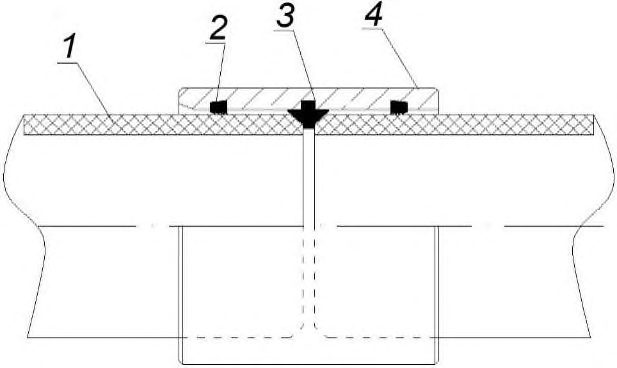
а - со стопорным кольцом; б - без стопорного кольца; 1 труба; 2 -уплотнительное эластомерное кольцо; 3 - стопорный элемент; 4 - муфта; 5 контрольная линия
Рисунок 1 - Муфтовые соединения
Примеры раструбных соединений приведены на рисунке 2.
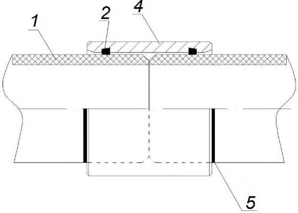
а с двумя уплотнительными эластомерными кольцами; б с одним уплотнительным эластомерным кольцом ; 1 труба; 2 раструб; 3 -уплотнительное эластомерное кольцо; 4 - контрольная линия
Рисунок 2 - Раструбные соединения
1 труба; 2 - уплотнительное эластомерное кольцо; 3 - муфта; 4 - прут-фиксатор Рисунок 3 - Муфтовое блокирующее соединение
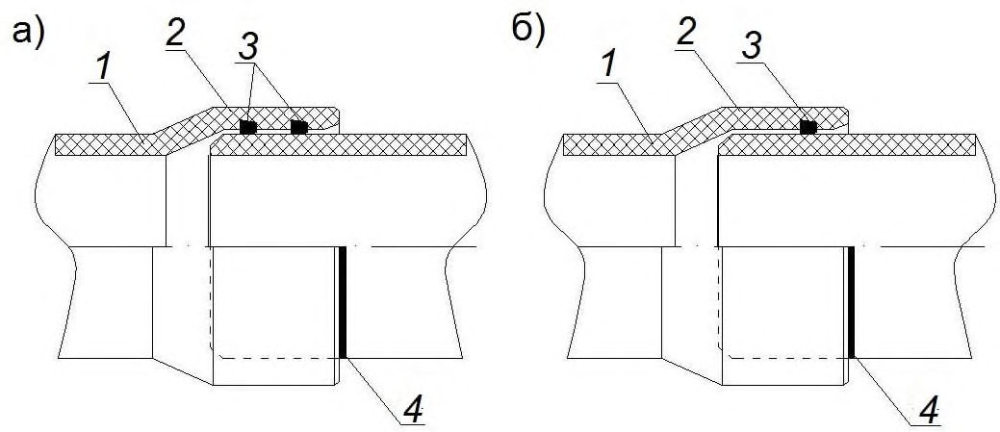
1 труба; 2 -раструб; 3 - уплотнительное эластомерное кольцо; 4 - прутфиксатор; 5 - контрольная линия
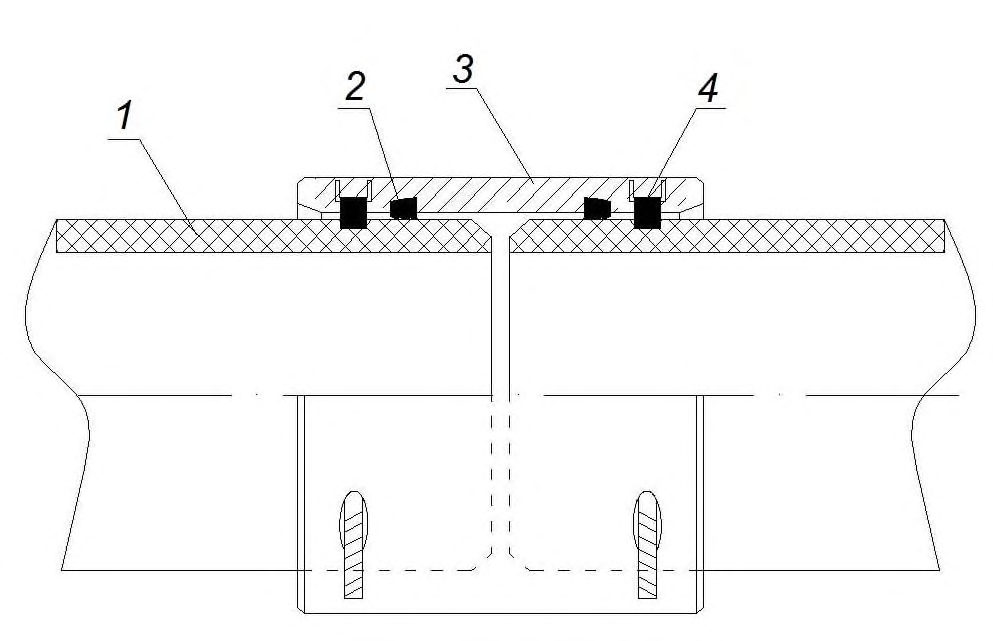
Рисунок 4 - Раструбное блокирующее соединение
- вставляют уплотнители в пазы так, чтобы поверх паза осталось от 2 до 4 петель уплотнения (рисунок 5). Для облегчения установки уплотнителя, рекомендуется его и паз смачивать водой;
- нажимая на петли с одинаковой силой, необходимо вставить каждую петлю уплотнителя в соответствующий паз. Далее осторожно распределить уплотнитель по всей окружности и проверить по всему диаметру плотность посадки с каждой стороны. Выступающий уплотнитель можно подбить с помощью резиновой киянки.
1 - муфта; 2 - уплотнитель
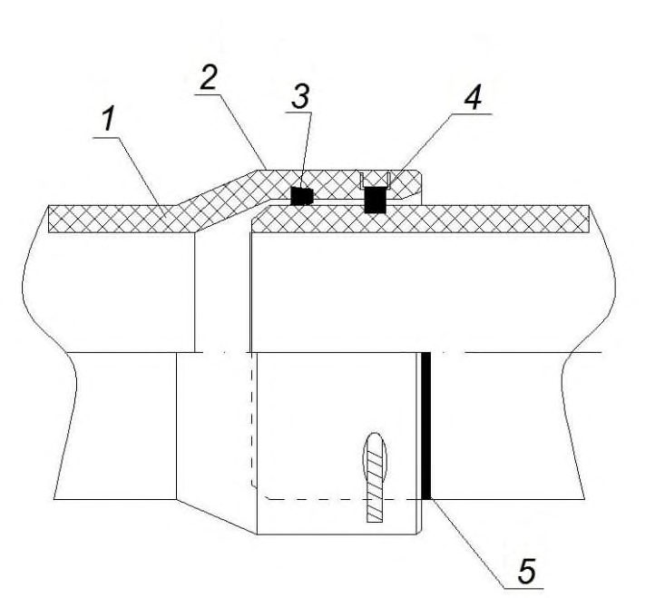
Рисунок 5 - Установка уплотнителя в муфту
На трубу надевается строп или стальной хомут на расстоянии от 1 до 2 м от конца трубы, муфта вывешивается над землей на высоте не менее 100 мм и надевается на гладкий конец трубы, как показано на рисунке 6. С помощью деревянного бруска и двух ручных домкратов или ручных (рычажных) талей муфта натягивается до стопорного кольца или контрольной отметки, нанесенной на трубе.
1 - брус 50×100; 2 - муфта; 3 - ручная (рычажная) таль; 4 - строп или канат; 5 -стальной хомут
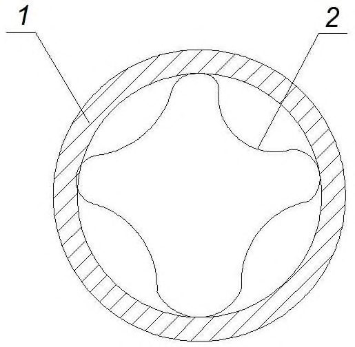
Рисунок 6 - Схема надевания муфты на трубу
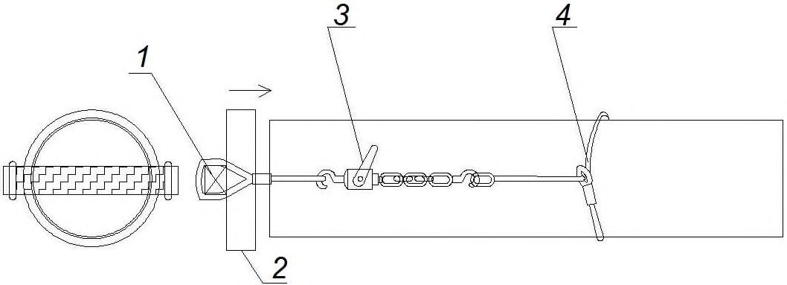
1 - мягкий строп; 2 - контрольная риска; 3 - упорная металлическая рама
Рисунок 7 - Стыковка труб с помощью экскаватора
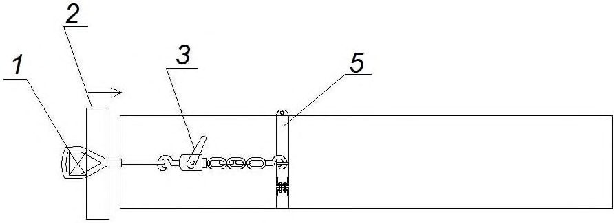
1 - контрольная риска; 2 - ручная (рычажная) таль; 3 - стальной хомут
Рисунок 8 - Наружная стыковка труб с помощью ручной (рычажной) тали
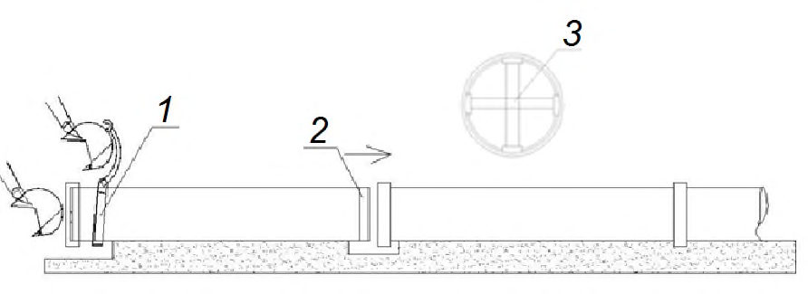
1 - стыковочная рама; 2 - ручная (рычажная) таль; 3 - контрольная риска
Рисунок 9 - Внутренняя стыковка труб с помощью ручной (рычажной) тали
Перед началом работ ручную (рычажную) таль следует проверить на отсутствие ослаблений натяжения или деформации цепи, двойной намотки, попадание песка, грязи и т. д. Если при соединении труб с фитингами возникают трудности, для облегчения работ следует воспользоваться дополнительной ручной (рычажной) талью, как показано на рисунке 8. Виды ручных (рычажных) талей, применяемые для стыковки труб, должны выбираться по таблице 1.
Таблица 1 Мощность ручных (рычажных) талей для труб длиной 12 м
| Мощность ручной (рычажной) тали или домкрата, т | Номинальный диаметр DN |
|---|---|
| 1,6 | 300-900 |
| 2,5 | 1000-1200 |
| 3,2 | 1400-2000 |
| 4,0 | 2200-2400 |
| 5,0 | 2600-3000 |
Примечание - Число применяемых ручных (рычажных) талей или домкратов должно быть не менее двух.
При затруднении соединения, необходимо приостановить работу и вынуть трубу. После выяснения и устранения причин (частичное сдирание резинового уплотнителя, попадания на резину посторонних предметов камней и. т. д.) операцию повторяют вновь. При монтаже необходимо убедиться, что труба правильно проходит через уплотнитель по всей окружности, а именно: внешний диаметр трубы равноудален от внутреннего диаметра муфты или раструба, а угловое отклонение и смещение соответствуют таблицам 2 и 3.
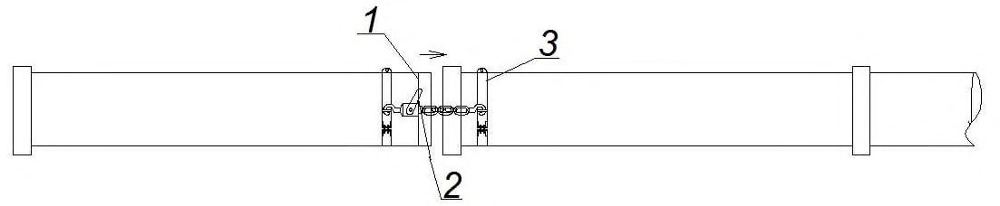
1 - труба; 2 - муфта; 3 - угловое отклонение; 4 - смещение; 5 - радиус кривизны
Рисунок 10 - Схема смещения трубы в муфтовом соединении
Таблица 2 Угловые отклонения в муфтовом соединении
| Номинальный диаметр DN | Угол отклонения, не более, при номинальном давлении PN | Угол отклонения, не более, при номинальном давлении PN | Угол отклонения, не более, при номинальном давлении PN | Угол отклонения, не более, при номинальном давлении PN |
|---|---|---|---|---|
| Номинальный диаметр DN | До 1,6 | 2,0 | 2,5 | 3,2 |
| 300-500 | 3,0° | 2,5° | 2,0° | 1,5° |
| 600-900 | 2,0° | 1,5° | 1,3° | 1,0° |
| 1000-1800 | 1,0° | 0,8° | 0,5° | 0,5° |
| 2000-3000 | 0,5° | Не допускается | Не допускается | Не допускается |
Таблица 3 Смещения в муфтовом соединении в зависимости от углового отклонения
| Угловое отклонение | Смещение, мм, не более, для трубы длиной, м | Смещение, мм, не более, для трубы длиной, м | Смещение, мм, не более, для трубы длиной, м |
|---|---|---|---|
| Угловое отклонение | 3 | 6 | 12 |
| 3,0° | 157 | 314 | 628 |
| 2,5° | 136 | 261 | 523 |
| 2,0° | 105 | 209 | 419 |
| 1,5° | 78 | 157 | 313 |
| 1,3° | 65 | 120 | 240 |
| 1,0° | 52 | 105 | 209 |
| 0,8° | 39 | 78 | 156 |
| 0,5° | 26 | 52 | 104 |
Примечание - Смещение трубы должно оставаться в пределах, предусмотренных конкретным изготовителем труб.
Для нанесения тонкого слоя смазки на уплотнитель и гладкий конец второй трубы применяется чистая материя, кисточка или валик. После смазывания необходимо исключить попадание загрязнений на конец трубы и уплотнитель. Минимальное количество смазки на один стык приведено в таблице 4.
Таблица 4 Расход смазки на один стык
| Номинальный диаметр DN | Количество смазки, кг |
|---|---|
| 300-500 | 0,075 |
| 600-800 | 0,1 |
| 900-1000 | 0,15 |
| 1200-1400 | 0,2 |
| 1600-1800 | 0,3 |
| 2000-2200 | 0,4 |
| 2400-2600 | 0,6 |
| 2800-3000 | 0,7 |
- фиксированный стеклокомпозитный фланец;
- свободный стеклокомпозитный или стальной фланец;
- обжимной стальной или чугунный фланец в любой комбинации.
Данный вид соединения применяется для соединения стеклокомпозитных труб между собой, с трубами и фитингами из других материалов (сталь, чугун, полиэтилен) или с запорно-регулирующей арматурой. Примеры фланцевых соединений приведены на рисунках 11-13.
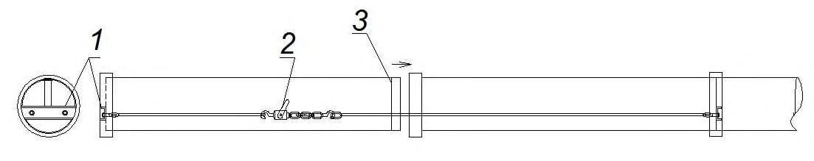
а - с фиксированным фланцем; б - со свободным фланцем; 1 стеклокомпозитная труба; 2 свободный стеклокомпозитный или стальной фланец; 3 стеклокомпозитный бурт; 4 прокладка; 5 труба из стали, чугуна или полиэтилена; 6 - полиэтиленовый бурт; 7 - свободный фланец
Рисунок 11 - Схемы фланцевых соединений со свободным стеклокомпозитным или стальным фланцем
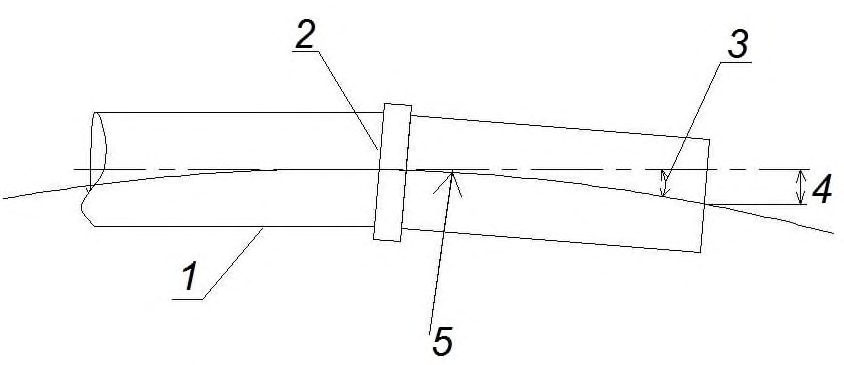
а - с фиксированным фланцем; б - со свободным фланцем; 1 -стеклокомпозитная труба; 2 - фиксированный стеклокомпозитный фланец; 3 -прокладка; 4 - труба из полиэтилена; 5 - полиэтиленовый бурт; 6 - свободный фланец
Рисунок 12 - Схемы фланцевых соединений с фиксированным стеклокомпозитным фланцем
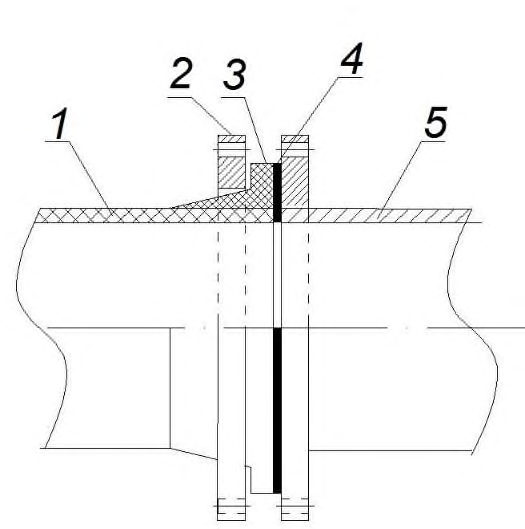
1 стеклокомпозитная труба; 2 - обжимной стальной или чугунный фланец; 3 -прокладка; 4 - труба из стали или чугуна
Рисунок 13 - Схема фланцевого соединения с обжимным стальным или чугунным фланцем
Фланцы должны быть выровнены и не должны подвергаться перегрузке или перекосам, чтобы совпадать друг с другом. При использовании прокладок, небольшие смещения могут поглощаться их эластичностью.
При применении стеклокомпозитных фланцев шайбы должны быть на всех болтах и гайках.
- очищают поверхность фланца и прокладки;
- помещают прокладку на поверхность фланца, центрируют по отношению к внутреннему диаметру фланца и фиксируют липкой лентой или прокладка может быть центрирована с помощью нескольких болтов, которые поддерживали бы ее;
- выравнивают соединяемые фланцы;
- вставляют болты, шайбы, гайки. Затягивают все болты динамометрическим ключом равномерно в диаметрально противоположном порядке, чтобы расстояние между фланцами было одинаково, что позволяет избежать перекосов и концентрации напряжений на бурт стеклокомпозитной трубы. Последовательность, показана на рисунке 14;
- проверяют затяжку болтов через 1 час, при необходимости, подтягивают.
Рисунок 14 - Схема последовательности затяжки болтов
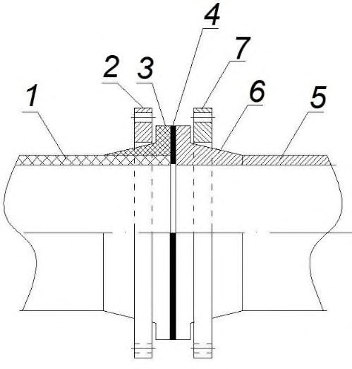
Рисунок 15 - Стяжная муфта (хомут)
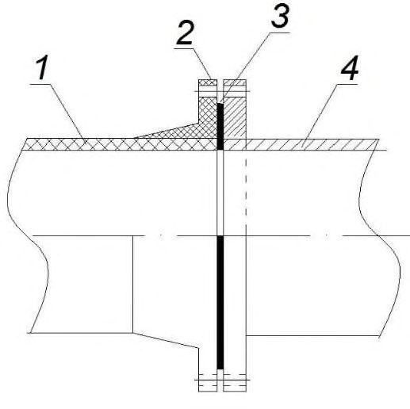
- конический раструб и конический гладкий конец трубы;
- прямой раструб или муфта и прямой гладкий конец трубы;
- резьбовой раструб или муфта и резьбовой конец трубы.
При клеевом соединении, должны соблюдаться рекомендации производителя труб. Перед перемещением и засыпкой трубы после склеивания следует выдерживать время, установленное в нормативном документе на клей, для полного отверждения клея. Клеевые соединения рекомендуется применять для резьбовых труб номинальным диаметром до DN200, для остальных типов -номинальным диаметром не более DN400. а - конический раструб и конический гладкий конец трубы; б - прямой раструб или муфта и прямой гладкий конец трубы; в - резьбовой раструб и резьбовой конец трубы; г - резьбовая муфта и резьбовой конец трубы; 1 - стеклокомпозитная труба; 2 - раструб или муфта; 3 - место склеивания; 4 - клеевой шов; 5 - резьба под клей
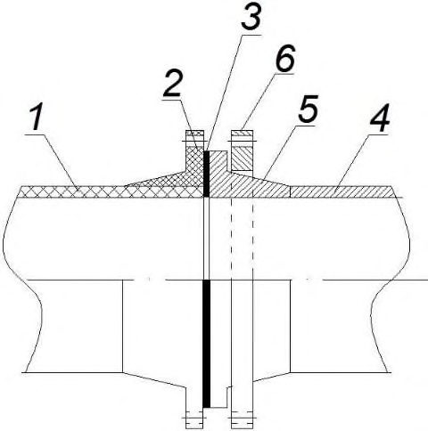
Рисунок 16 - Типы клеевых соединений
Такой вид соединения применяется при ручном изготовлении фитингов из отрезков труб, может применяться при проведении ремонтных работ на трубопроводах. Для улучшения эксплуатационных характеристик трубопроводов допускается применять дополнительное внутреннее ламинирование соединения труб большого диаметра при возможности работать внутри трубы.
Рисунок 17 - Муфтовое ламинируемое соединение
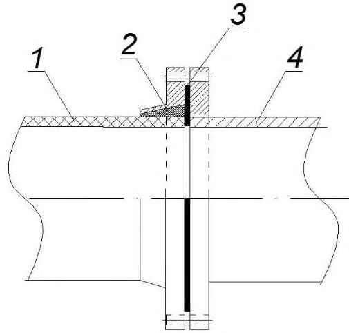
При использовании этого метода на месте монтажа необходимо обратиться за инструкциями и консультациями к заводу-изготовителю.
6.4Чугунные трубопроводы
Состав хризотилцементной смеси для устройства замка и герметика определяется проектом.
Таблица 5
| Номинальный диаметр труб DN | Глубина заделки, мм | Глубина заделки, мм | Глубина заделки, мм |
|---|---|---|---|
| Номинальный диаметр труб DN | при применении пеньковой пряди | при устройстве замка | при применении только герметика |
| 65-200 | 35 | 30 | 50 |
| 250-400 | 45 | 30-35 | 60-65 |
| 600-1000 | 50-60 | 40-50 | 70-80 |
6.5Хризотилцементные трубопроводы
6.6Железобетонные и бетонные трубопроводы
- от 12 до 15 мм - для железобетонных напорных труб диаметром до 1000мм;
- от 18 до 22 мм - то же, диаметром свыше 1000 мм;
- от 8 до 12 мм - для железобетонных и бетонных безнапорных раструбных труб диаметром до 700 мм;
- от 15 до 18 мм - то же, свыше 700 мм;
- не более 25 мм - для фальцевых труб.
Таблица 6
| Глубина заделки, мм | Глубина заделки, мм | Глубина заделки, мм | |
|---|---|---|---|
| Номинальный диаметр DN | при применении пеньковой или сизальской пряди | при устройстве замка | при применении только герметиков |
| 100-150 | 25 (35) | 25 | 35 |
| 200-250 | 40 (50) | 40 | 40 |
| 400-600 | 50 (60) | 50 | 50 |
| 800-1600 | 55 (65) | 55 | 70 |
| 2400 | 70 (80) | 70 | 95 |
Зазоры между упорной поверхностью раструбов и торцами труб в трубопроводах диаметром 1000 мм и более следует изнутри заделывать цементным раствором. Марка цемента определяется проектом.
Для водосточных трубопроводов допускается раструбную рабочую щель на всю глубину заделывать цементным раствором марки В 7,5, если другие требования не предусмотрены проектом.
6.7Трубопроводы из керамических труб
Основные размеры элементов стыкового соединения керамических труб должны соответствовать значениям, приведенным в таблице 7.
Таблица 7
| Глубина заделки, мм | Глубина заделки, мм | Глубина заделки, мм | |
|---|---|---|---|
| Номинальный диаметр DN | при применении пеньковой или сизальской пряди | при устройстве замка | при применении только герметиков или битумной мастики |
| 160-300 | 30 | 30 | 40 |
| 350-600 | 30 | 38 | 45 |
6.8Трубопроводы из пластмассовых труб
При выполнении сварочных работ место сварки необходимо защищать от воздействия атмосферных осадков и пыли.
7Переходы трубопроводов через естественные и искусственные преграды
- 0,6 % длины футляра при условии обеспечения проектного уклона - по вертикали;
- 1 % длины футляра - по горизонтали.
Для напорных трубопроводов эти отклонения не должны превышать соответственно 1 % и 1,5 % длины футляра.
8Сооружения водоснабжения и канализации
8.1Сооружения для забора поверхностной воды
Строительство сооружений для забора поверхностной воды из рек, озер, водохранилищ и каналов должно осуществляться, как правило, специализированными строительными и монтажными организациями в соответствии с проектом.
До начала устройства основания под русловые водоприемники должны быть проверены их разбивочные оси и отметки временных реперов.
8.2Водозаборные скважины
СП 129.13330.2019 фонтанирующих скважинах уровни воды следует измерять путем наращивания труб или измерением давления воды.
По согласованию с проектной организацией образцы пород допускается отбирать не из всех скважин.
- вращательном - путем затрубной и межтрубной цементации колонн обсадных труб до отметок, предусмотренных проектом;
- ударном - задавливанием и забивкой обсадной колонны в слой естественной плотной глины на глубину не менее 1 м или проведением подбашмачной цементации путем создания каверны расширителем или эксцентричным долотом.
Перед началом откачки скважина должна быть очищена от шлама и прокачана, как правило, эрлифтом. В трещиноватых скальных и гравийно-галечниковых водоносных породах откачку следует начинать с максимального проектного понижения уровня воды, а в песчаных породах -с минимального проектного понижения. Значение минимального фактического понижения уровня воды должно быть в пределах от 0,4 до 0,6 максимального фактического.
При вынужденной остановке работ по откачке воды, если суммарное время остановки превышает 10 % общего проектного времени на одно понижение уровня воды, откачку воды на это понижение следует повторить. В случае откачки из скважин, оборудованных фильтром с обсыпкой, значение усадки материала обсыпки следует измерять в процессе откачки один раз в сутки.
Уровень воды в скважине следует измерять с точностью до 0,1 % глубины измеряемого уровня воды.
Дебит и уровни воды в скважине следует измерять не реже чем через каждые 2 ч в течение всего времени откачки, определенного проектом.
Контрольные промеры глубины скважины следует производить в начале и в конце откачки в присутствии представителя заказчика.
СП 129.13330.2019 соответствии с ГОСТ 31861 и ГОСТ 31942 с доставкой их в лабораторию для проверки качества воды согласно ГОСТ Р 51232.
Качество цементации всех обсадных колонн и местоположение рабочей части фильтра следует проверять геофизическими методами. Устье самоизливающейся скважины по окончании бурения необходимо оборудовать задвижкой и штуцером для манометра.
Для эксплуатации скважина в соответствии с проектом должна быть оборудована приборами для измерения уровней воды и дебита.
- геолого-литологический разрез с конструкцией скважины, откорректированный по результатам геофизических исследований;
- акты на заложение скважины, установку фильтра, цементацию обсадных колонн;
- сводную каротажную диаграмму с результатами ее расшифровки, подписанную руководителем организации, выполнившей геофизические работы;
- журнал наблюдений за откачкой воды из водозаборной скважины;
- результаты химических, бактериологических анализов и органолептических показателей воды по ГОСТ Р 51232 и заключение санитарно-эпидемиологической службы.
Документация, до сдачи заказчику, должна быть согласована с проектной организацией.
8.3Емкостные сооружения
8.3.3. После окончания всех видов работ и набора бетоном проектной прочности производится гидравлическое испытание емкостных сооружений в соответствии с 10.3.
Отклонения от проектной ширины щелевых отверстий в полиэтиленовых трубах не должны превышать 0,1 мм, а от проектной длины щели в свету ± 3 мм.
8.3.6. Отклонения расстояний между осями муфт колпачков в распределительных и отводящих системах фильтров не должны превышать ± 4 мм, а в отметках верха колпачков (по цилиндрическим выступам) - ± 2 мм от проектного положения.
При устройстве переливов с треугольными вырезами отклонения отметок низа вырезов от проектных не должны превышать ± 3 мм.
9Дополнительные требования к строительству трубопроводов и сооружений водоснабжения и канализации в особых природных и климатических условиях
Подготовку основания под трубопроводы и сооружения на льдонасыщенных грунтах следует осуществлять путем оттаивания их на проектную глубину и уплотнения или замены, в соответствии с проектом, льдонасыщенных грунтов талыми уплотненными грунтами.
Движение транспортных средств и строительных машин в летнее время должно производиться по дорогам и подъездным путям, сооруженным в соответствии с проектом.
При строительстве железобетонных емкостных сооружений, трубопроводов, колодцев и камер следует применять цементные растворы с пластифицирующими добавками в соответствии с проектом.
Зазоры деформационных швов на всю их высоту (от подошвы фундаментов до верха надфундаментной части сооружений) должны быть очищены от грунта, строительного мусора, наплывов бетона, раствора и отходов опалубки.
Актами освидетельствования скрытых работ должны быть оформлены все основные специальные работы, в том числе: монтаж компенсаторов, устройство швов скольжения в фундаментных конструкциях и деформационных швов; анкеровка и сварка в местах устройства шарнирных соединений связей-распорок; устройство пропусков труб через стены колодцев, камер, емкостных сооружений.
Плети трубопровода следует протаскивать вдоль траншеи или перемещать на плаву с заглушенными концами.
Укладку трубопроводов на полностью отсыпанные с уплотнением дамбы необходимо производить как в обычных грунтовых условиях.
10Испытание трубопроводов и сооружений
10.1Напорные трубопроводы
- 0,5 МПа - для подземных чугунных, хризотилцементных и железобетонных;
- 0,035 МПа -для подземных стеклокомпозитных труб с муфтовыми соединениями, для всех остальных типов соединений согласно документации предприятий-изготовителей.
Стеклокомпозитный трубопровод, не прошедший пневматические испытания, не считается не принятым, если были проведены повторные гидравлические испытания с положительным результатом;
- 1,6 МПа - для подземных стальных;
- 0,3 МПа - для надземных стальных.
- первый -предварительное испытание на прочность и герметичность, выполняемое после засыпки пазух с подбивкой грунта на половину вертикального диаметра и присыпкой труб в соответствии с СП 45.13330 с оставленными открытыми для осмотра стыковыми соединениями; это испытание допускается выполнять без участия представителей заказчика и эксплуатационной организации с составлением акта, утверждаемого главным инженером строительной организации;
- второй - приемочное (окончательное) испытание на прочность и герметичность следует выполнять после полной засыпки трубопровода при участии представителей заказчика и эксплуатационной организации с составлением акта о результатах испытания по форме, приведенной в приложении Б или В.
Оба этапа испытания должны выполняться до установки гидрантов, вантузов, предохранительных клапанов, вместо которых на время испытания следует устанавливать фланцевые заглушки. Предварительное испытание трубопроводов, доступных осмотру в рабочем состоянии или подлежащих в процессе строительства немедленной засыпке (производство работ в зимнее время, в стесненных условиях), при соответствующем обосновании в проектах допускается не производить.
Результаты предварительного и приемочного испытаний следует оформлять актом по форме, приведенной в приложении Б.
Значение испытательного давления на герметичность Р г для проведения как предварительного, так и приемочного испытаний напорного трубопровода должно быть равным значению внутреннего расчетного давления Р р плюс значение ∆ Р , принимаемое в соответствии с таблицей 8 в зависимости от верхнего предела измерения давления, класса точности и цены деления шкалы манометра. При этом значение Р г не должно превышать значения приемочного испытательного давления трубопровода на прочность Р и.
Таблица 8
| ∆ Р для различных значений внутреннего расчетного давления Р р в трубопроводе | ∆ Р для различных значений внутреннего расчетного давления Р р в трубопроводе | ∆ Р для различных значений внутреннего расчетного давления Р р в трубопроводе | ∆ Р для различных значений внутреннего расчетного давления Р р в трубопроводе | ∆ Р для различных значений внутреннего расчетного давления Р р в трубопроводе | ∆ Р для различных значений внутреннего расчетного давления Р р в трубопроводе | ∆ Р для различных значений внутреннего расчетного давления Р р в трубопроводе | ∆ Р для различных значений внутреннего расчетного давления Р р в трубопроводе | ∆ Р для различных значений внутреннего расчетного давления Р р в трубопроводе | ∆ Р для различных значений внутреннего расчетного давления Р р в трубопроводе | ∆ Р для различных значений внутреннего расчетного давления Р р в трубопроводе | ∆ Р для различных значений внутреннего расчетного давления Р р в трубопроводе | |
|---|---|---|---|---|---|---|---|---|---|---|---|---|
| Значение внутрен- него расчет- ного давления в трубопро- воде Р р , | верх- ний пре- дел изме- рения дав- ле- ния, МПа цена деле- ния, МПа ∆ Р, МПа | верх- ний пре- дел изме- рения дав- ле- ния, МПа цена деле- ния, МПа ∆ Р, МПа | верх- ний пре- дел изме- рения дав- ле- ния, МПа цена деле- ния, МПа ∆ Р, МПа | верх- ний пре- дел изме- рения дав- ле- ния, Для манометров | цена деле- ния, МПа | ∆ Р , МПа | верх- ний пре- дел изме- рения дав- ле- ния, точности | цена деле- ния, МПа | ∆ Р , МПа | верх- ний пре- дел изме- рения дав- ле- ния, 1,5 | цена деле- ния, МПа | ∆ Р , МПа |
| 0,4 | 0,4 | 0,4 | 0,6 | 0,6 | 0,6 | 1 | 1 | 1 | ||||
| До 0,4 | 0,6 | 0,002 | 0,02 | 0,6 | 0,005 | 0,03 | 0,6 | 0,005 | 0,05 | 0,6 | 0,01 | 0,07 |
| От 0,41 до 0,75 | 1 | 0,005 | 0,04 | 1,6 | 0,01 | 0,07 | 1,6 | 0,01 | 0,1 | 1,6 | 0,02 | 0,14 |
| От 0,76 до | 1,6 | 0,005 | 0,05 | 1,6 | 0,01 | 0,09 | 2,5 | 0,14 | 2,5 | 0,05 | 0,25 | |
| 1,2 От 1,21 до | 0,02 | |||||||||||
| 2,0 От 2,01 до | 2,5 4 | 0,01 0,02 | 0,1 0,14 | 2,5 4 | 0,02 | 0,14 | 4 | 0,05 | 0,25 | 4 6 | 0,1 0,1 | 0,5 0,5 |
| 2,5 | 0,05 | 0,25 | 4 | 0,05 | 0,3 | |||||||
| От 2,51 до 3,0 | 4 | 0,02 | 0,16 | 4 | 0,05 | 0,25 | 6 | 0,05 | 0,35 | 6 | 0,1 | 0,6 |
| От 3,01 до 4,0 | 6 | 0,02 | 0,2 | 6 | 0,05 | 0,3 | 6 | 0,05 | 0,45 | 6 | 0,1 | 0,7 |
| От 4,01 до 5,0 | 6 | 0,2 | 0,24 | 6 | 0,05 | 0,4 | 10 | 0,1 | 0,6 | 10 | 0,2 | 1 |
Трубопроводы из труб ПВД, ПНД и ПВХ, независимо от способа испытания, следует испытывать при длине не более 0,5 км за один прием, при большей длине - участками не более 0,5 км. При соответствующем обосновании в проекте допускается испытание указанных трубопроводов за один прием при длине до 1 км при условии, что значение допустимого расхода подкаченной воды должно определяться как для участка длиной 0,5 км.
Таблица 9
| Характеристика трубопровода | Значение испытательного давления при предварительном испытании, МПа |
|---|---|
| 1 Стальной 1-го класса* со стыковыми соединениями на сварке (в том числе подводный) с внутренним расчетным давлением Р р до 0,75 МПа 2 То же, от 0,75 до 2,5 МПа | 1,5 Внутреннее расчетное давление коэффициентом 2, но не заводского испытательного труб |
| 3 То же, св. 2,5 МПа | с более давления Внутреннее расчетное давление коэффициентом 1,5, но не |
| с более заводского испытательного давления труб | |
| 4 Стальной, состоящий из отдельных секций, соединяемых на фланцах, с внутренним расчетным давлением Р р до 0,5 МПа | 0,6 |
| 5 Стальной 2- и 3-го классов со стыковыми соединениями на сварке и с внутренним расчетным давлением Р р до 0,75 МПа | 1,0 |
| Характеристика трубопровода | Значение испытательного давления при предварительном испытании, МПа | Значение испытательного давления при предварительном испытании, МПа | Значение испытательного давления при предварительном испытании, МПа | Значение испытательного давления при предварительном испытании, МПа | Значение испытательного давления при предварительном испытании, МПа |
|---|---|---|---|---|---|
| 6 То же, от 0,75 до 2,5 МПа | Внутреннее | расчетное | расчетное | давление с | давление с |
| 7 То же, св. 2,5 МПа | коэффициентом заводского труб Внутреннее коэффициентом | 1,5, испытательного | но расчетное 1,25, но | не давления давление не | более с более |
| 8 Стальной самотечный водовод водозабора или канализационный выпуск | Устанавливается проектом | Устанавливается проектом | Устанавливается проектом | Устанавливается проектом | Устанавливается проектом |
| 9 Чугунный со стыковыми соединениями под зачеканку (по ГОСТ 9583 для труб всех классов) с внутренним расчетным давлением до 1 МПа | Внутреннее расчетное давление плюс 0,5, но не менее 1 | и не | более | 1,5 | Внутреннее расчетное давление плюс 0,5, но не менее 1 |
| 10 То же, со стыковыми соединениями на | Внутреннее | расчетное | давление | с | |
| 11 Железобетонный | коэффициентом 1,5, но не менее 1,5 и не более 0,6 заводского испытательного гидравлического давления | коэффициентом 1,5, но не менее 1,5 и не более 0,6 заводского испытательного гидравлического давления | коэффициентом 1,5, но не менее 1,5 и не более 0,6 заводского испытательного гидравлического давления | коэффициентом 1,5, но не менее 1,5 и не более 0,6 заводского испытательного гидравлического давления | коэффициентом 1,5, но не менее 1,5 и не более 0,6 заводского испытательного гидравлического давления |
| Внутреннее | расчетное | давление | с | ||
| 12 Хризотилцементный | водонепроницаемость Внутреннее расчетное коэффициентом 1,3, но не заводского испытательного водонепроницаемость | давление более давления | с 0,6 на | ||
| 13 Пластмассовый | Внутреннее коэффициентом 1,3 | расчетное | давление | с | |
| 14 Стеклокомпозитный | Внутреннее расчетное коэффициентом 1,5 номинального давления | и не трубы | давление более | с 1,5 | |
| * Классы трубопроводов принимаются по СП 31.13330. | * Классы трубопроводов принимаются по СП 31.13330. | * Классы трубопроводов принимаются по СП 31.13330. | * Классы трубопроводов принимаются по СП 31.13330. | * Классы трубопроводов принимаются по СП 31.13330. | * Классы трубопроводов принимаются по СП 31.13330. |
- закончены все работы по заделке стыковых соединений, устройству упоров, монтажу соединительных частей и арматуры, получены удовлетворительные результаты контроля качества сварки и изоляции стальных трубопроводов;
- установлены фланцевые заглушки на отводах взамен гидрантов, вантузов, предохранительных клапанов и в местах присоединения к эксплуатируемым трубопроводам;
- подготовлены средства наполнения, опрессовки и опорожнения испытуемого участка, смонтированы временные коммуникации и установлены приборы и краны, необходимые для проведения испытаний;
- осушены и провентилированы колодцы для производства подготовительных работ, организовано дежурство на границе участков охранной зоны;
- заполнен водой испытуемый участок трубопровода (при гидравлическом способе испытания - из него удален воздух.
Порядок проведения гидравлического испытания напорных трубопроводов на прочность и герметичность приведен в приложении Г.
Для измерения объема воды, подкачиваемой в трубопровод и выпускаемой из него при проведении испытания, следует применять мерные бачки или счетчики холодной воды (водомеры) по ГОСТ 6019, аттестованные в установленном порядке.
- от 4 до 5 м³ /ч - для трубопроводов диаметром до 400 мм;
- от 6 до 10 м³ /ч - для трубопроводов диаметром от 400 до 600 мм;
- от 10 до 15 м³ /ч - для трубопроводов диаметром от 700 до 1000 мм;
- от 15 до 20 м³ /ч - для трубопроводов диаметром свыше 1100 мм.
При заполнении трубопровода водой воздух должен быть удален через открытые краны и задвижки.
- 72 ч - для железобетонных труб (в том числе 12 ч под внутренним расчетным давлением Р р);
- 24 ч - для хризотилцементных труб (в том числе 12 ч под внутренним расчетным давлением Р р);
- 24 ч - для чугунных труб.
Для стальных, полиэтиленовых, стеклокомпозитных трубопроводов выдержка для водонасыщения не производится.
Если трубопровод был заполнен водой до засыпки грунтом, то указанная продолжительность водонасыщения устанавливается с момента засыпки трубопровода.
Если расход подкаченной воды превышает допустимый, то трубопровод признается не выдержавшим испытание и должны быть приняты меры к обнаружению и устранению скрытых дефектов трубопровода, после чего должно быть проведено повторное испытание трубопровода.
Таблица 10
| Внутренний диаметр трубопровода, мм | Значение допустимого расхода подкаченной воды на испытуемый участок трубопровода длиной 1 км и более, л/мин, при приемочном испытательном давлении для труб | Значение допустимого расхода подкаченной воды на испытуемый участок трубопровода длиной 1 км и более, л/мин, при приемочном испытательном давлении для труб | Значение допустимого расхода подкаченной воды на испытуемый участок трубопровода длиной 1 км и более, л/мин, при приемочном испытательном давлении для труб | Значение допустимого расхода подкаченной воды на испытуемый участок трубопровода длиной 1 км и более, л/мин, при приемочном испытательном давлении для труб |
|---|---|---|---|---|
| Внутренний диаметр трубопровода, мм | стальных | чугунных | хризотилцементных | железобетонных |
| 100 | 0,28 | 0,70 | 1,40 | - |
| 125 | 0,35 | 0,90 | 1,56 | - |
| 150 | 0,42 | 1,05 | 1,72 | - |
| 200 | 0,56 | 1,40 | 1,98 | 2,0 |
| 250 | 0,70 | 1,55 | 2,22 | 2,2 |
| 300 | 0,85 | 1,70 | 2,42 | 2,4 |
| 350 | 0,90 | 1,80 | 2,62 | 2,6 |
| 400 | 1,00 | 1,95 | 2,80 | 2,8 |
| 450 | 1,05 | 2,10 | 2,96 | 3,0 |
| 500 | 1,10 | 2,20 | 3,14 | 3,2 |
| 600 | 1,20 | 2,40 | - | 3,4 |
| 700 | 1,30 | 2,55 | - | 3,7 |
| 800 | 1,35 | 2,70 | - | 3,9 |
| 900 | 1,45 | 2,90 | - | 4,2 |
| 1000 | 1,50 | 3,00 | - | 4,4 |
| 1100 | 1,55 | - | - | 4,6 |
| 1200 | 1,65 | - | - | 4,8 |
| 1400 | 1,75 | - | - | 5,0 |
| 1600 | 1,85 | - | - | 5,2 |
| 1800 | 1,95 | - | - | 6,2 |
| 2000 | 2,10 | - | - | 6,9 |
Примечания
1 Для чугунных трубопроводов со стыковыми соединениями на резиновых уплотнителях допустимый расход подкаченной воды следует принимать с коэффициентом 0,7.
2 При длине испытуемого участка трубопровода менее 1 км, приведенные в таблице значения допустимого расхода подкаченной воды следует умножать на его длину, км; при длине свыше 1 км, допустимый расход подкаченной воды следует принимать как для 1 км.
3 Для трубопроводов из ПВД и ПНД со сварными соединениями и трубопроводов из ПВХ с клеевыми соединениями допустимый расход подкаченной воды следует принимать как для стальных трубопроводов, эквивалентных по величине наружного диаметра, определяя этот расход интерполяцией.
4 Для трубопроводов из ПВХ с соединениями на резиновых уплотнителях допустимый расход подкаченной воды следует принимать как для чугунных трубопроводов с такими же соединениями, эквивалентных по величине наружного диаметра, определяя этот расход интерполяцией.
5 Для трубопроводов из стеклокомпозитных труб с муфтовыми и раструбными соединениями допустимый расход подкаченной воды на испытуемом участке может зависеть от диаметра трубопровода, числа стыков, длины испытуемого участка, характера материала трубопровода, а также давления, при котором проводится испытание. Испытание должно проводиться в соответствии с внутренней документацией и рекомендациями завода изготовителя труб.
10.1.14.1 При гидравлических испытаниях стеклокомпозитных трубопроводов в полевых условиях с давлением в трубах ниже 1,6 МПа соединения трубопроводов должны быть засыпаны грунтом до верха, а трубопровод - на глубину минимальной засыпки.
10.1.14.2 При гидравлических испытаниях стеклокомпозитных трубопроводов в полевых условиях с давлением в трубах 1,6 МПа и более:
- для трубопроводов, проложенных по прямой линии, соединения должны быть засыпаны грунтом до верха, а трубопровод на глубину минимальной засыпки;
- для трубопроводов, проложенных с угловым отклонением, трубы должны быть засыпаны грунтом до проектной отметки.
10.1.14.3 Трубопровод считается выдержавшим испытания, если не наблюдается падения давления, фиксируемого по контрольному манометру. Если трубопровод не держит испытательного давления необходимо проверить:
- образование воздушных мешков;
- герметичность фланцевых соединений и мест установки запорнорегулирующей арматуры;
- провести испытания трубопровода меньшими участками для определения мест утечки.
10.1.14.4 Во время проведения гидравлических испытаний следует проверять испытуемый трубопровод не только при превышении допустимых пределов потерь, но и в случае нахождения ее в допустимых пределах. Также визуально проверяют поверхность грунта на наличие просачивания грунта или его провалов.
В местах просачивания воды на поверхность или в местах провалов необходимо производить шурфовку, проложенного трубопровода, для определения причин утечек воды с применением детектора утечек.
- 0,6 МПа - при предварительном и приемочном испытаниях стальных трубопроводов с расчетным внутренним давлением Р р до 0,5 МПа включительно;
- 1,15 Р р - при предварительном и приемочном испытаниях стальных трубопроводов с расчетным внутренним давлением Р р от 0,5 до 1,6 Мпа;
- 0,15 МПа - при предварительном и 0,6 МПа приемочном испытаниях чугунных, железобетонных и хризотилцементных трубопроводов независимо от значения расчетного внутреннего давления;
- до 0,1 МПа для стеклокомпозитных трубопроводов с муфтовыми соединениями при величине расчетного внутреннего давления. При испытаниях медленно повышают давление до 0,03 МПа и поддерживают не менее 5 мин для стабилизации температуры воздуха. Трубопровод считается выдержавшим испытание, если давление не упадет ниже 0,025 МПа. Максимально допустимое давление при испытаниях - 0,035 МПа.
- до 300 мм - 2 ч;
- от 300 до 600 мм - 4 ч;
- от 600 до 900 мм - 8 ч;
- от 900 до 1200 мм - 16 ч;
- от 1200 до 1400 мм - 24 ч;
- св. 1400 мм - 32 ч.
- до 0,3 МПа - в стальных трубопроводах;
- до 0,1 МПа - в чугунных, железобетонных и хризотилцементных.
При этом выявление неплотностей и других дефектов на трубопроводе следует производить по звуку просачивающегося воздуха и по пузырям, образующимся в местах утечек воздуха через стыковые соединения, покрытые снаружи мыльной эмульсией.
- давление в трубопроводе следует довести до значения испытательного давления на прочность, указанного в 10.1.15, и под этим давлением трубопровод выдержать в течение 30 мин; если нарушения целостности трубопровода под испытательным давлением не произойдет, то давление в трубопроводе снизить до 0,05 МПа и трубопровод выдержать под этим давлением 24 ч;
- после окончания срока выдержки трубопровода под давлением 0,05 МПа устанавливается давление, равное 0,03 МПа, - начальное испытательное давление трубопровода на герметичность Р н, отмечается время начала испытания на герметичность и барометрическое давление Р бн, мм рт. ст., соответствующее моменту начала испытания;
- трубопровод выдерживают под этим давлением в течение времени, указанного в таблице 11;
- по истечении времени, указанного в таблице 11, измеряют конечное давление в трубопроводе Р к , мм вод. ст., и конечное барометрическое давление Р бк, мм рт.ст.;
- значение падения давления Р , мм вод. ст., определяют по формуле
При использовании в манометре в качестве рабочей жидкости воды = 1, керосина = 0,87.
Примечание -По согласованию с проектной организацией продолжительность снижения давления допускается уменьшать в два раза, но не менее чем до 1 ч; при этом значение падения давления следует принимать в пропорционально уменьшенном размере.
СП 129.13330.2019 Таблица 11
| Трубопроводы | Трубопроводы | Трубопроводы | Трубопроводы | Трубопроводы | Трубопроводы | |
|---|---|---|---|---|---|---|
| стальные | стальные | чугунные | чугунные | хризотилцементные и железобетонные | хризотилцементные и железобетонные | |
| Внутренний диаметр труб, мм | продол- житель- ность испыта- ния, ч-мин | допустимое значение падения давления за время испытания, мм вод. ст. | продол- житель- ность испыта- ния, ч-мин | допустимое значение падения давления за время испытания, мм вод. ст. | продол- житель- ность испыта- ния, ч-мин | допустимое значение падения давления за время испытания, мм вод. ст. |
| 100 | 0-30 | 55 | 0-15 | 65 | 0-15 | 130 |
| 125 | 0-30 | 45 | 0-15 | 55 | 0-15 | 110 |
| 150 | 1-00 | 75 | 0-15 | 50 | 0-15 | 100 |
| 200 | 1-00 | 55 | 0-30 | 65 | 0-30 | 130 |
| 250 | 1-00 | 45 | 0-30 | 50 | 0-30 | 100 |
| 300 | 2-00 | 75 | 1-00 | 70 | 1-00 | 140 |
| 350 | 2-00 | 55 | 1-00 | 55 | 1-00 | 110 |
| 400 | 2-00 | 45 | 1-00 | 50 | 2-00 | 100 |
| 450 | 4-00 | 80 | 2-00 | 80 | 3-00 | 160 |
| 500 | 4-00 | 75 | 2-00 | 70 | 3-00 | 140 |
| 600 | 4-00 | 50 | 2-00 | 55 | 3-00 | 110 |
| 700 | 6-00 | 60 | 3-00 | 65 | 5-00 | 130 |
| 800 | 6-00 | 50 | 3-00 | 45 | 5-00 | 90 |
| 900 | 6-00 | 40 | 4-00 | 55 | 6-00 | 110 |
| 1000 | 12-00 | 70 | 4-00 | 50 | 6-00 | 100 |
| 1200 | 12-00 | 50 | - | - | - | - |
Примечание - Допустимое значение падения давления за время испытания и продолжительность испытания для стеклокомпозитных труб с разными типами соединений определяется в соответствии с технической документацией и рекомендациями изготовителя труб.
10.2Безнапорные трубопроводы
- определение объема воды, добавляемой в трубопровод, проложенный в сухих грунтах и мокрых грунтах, когда уровень (горизонт) грунтовых вод у верхнего колодца расположен ниже поверхности земли более чем на половину глубины заложения труб, считая от люка до шелыги;
- определение притока воды в трубопровод, проложенный в мокрых грунтах, когда уровень (горизонт) грунтовых вод у верхнего колодца расположен ниже поверхности земли менее чем на половину глубины заложения труб, считая от люка до шелыги. Способ испытания трубопровода устанавливается проектом.
Колодцы по проекту с водонепроницаемыми стенками, внутренней и наружной изоляцией, могут быть испытаны на добавление воды или приток грунтовой воды, в соответствии с 10.2.1, совместно с трубопроводами или отдельно от них.
Колодцы, по проекту без водонепроницаемых стенок, внутренней или наружной гидроизоляции, приемочному испытанию на герметичность не подвергаются.
При затруднениях с доставкой воды, обоснованных в проекте, испытание безнапорных трубопроводов допускается производить выборочно (по указанию заказчика): двух-трех участков - при общей протяженности трубопровода до 5 км; нескольких участков общей протяженностью не менее 30 % - при протяженности трубопровода свыше 5 км.
Если результаты выборочного испытания участка трубопровода окажутся неудовлетворительными, то испытанию подлежат все участки трубопровода.
Для безнапорных стеклокомпозитных трубопроводов испытательное давление должно быть не менее 1,2 P гид ( P гид -гидростатическое давление) над верхом трубы или уровнем грунтовых вод, - берется большее из значений в самой высокой точке, и не более 6 м напора в самой низкой точке испытуемого участка.
СП 129.13330.2019
Наполняют стеклокомпозитный трубопровод водой, выдерживают не менее 2 ч для стабилизации, после чего восстанавливают исходный уровень воды. Затем добавляют воду из измерительного сосуда с интервалом 5 мин в течение 30 мин и отмечают количество, необходимое для поддержания исходного уровня воды.
Трубопровод и колодец признаются выдержавшими предварительное испытание, если при их осмотре не обнаружено утечек воды. При отсутствии в проекте повышенных требований к герметичности трубопровода на поверхности труб и стыков допускается отпотевание с образованием капель, не сливающихся в одну струю при отпотеваний не более чем на 5 % труб на испытуемом участке.
- по измеряемому в верхнем колодце объему добавляемой в стояк или колодец воды в течение 30 мин; при этом понижение уровня воды в стояке или в колодце допускается не более чем на 20 см;
- по измеряемому в нижнем колодце объему притекающей в трубопровод грунтовой воды.
Трубопровод признается выдержавшим приемочное испытание на герметичность, если определенные при испытании значения объемов добавленной воды по первому способу (приток грунтовой воды по второму способу) не более указанных в таблице 12, о чем должен быть составлен акт по форме, приведенной в приложении Д.
Таблица12
| Номинальный диаметр трубопровода DN | Значение допустимого объема добавленной в трубопровод воды (приток воды) на 10 м длины испытуемого трубопровода за время испытания 30 мин, л, для труб | Значение допустимого объема добавленной в трубопровод воды (приток воды) на 10 м длины испытуемого трубопровода за время испытания 30 мин, л, для труб | Значение допустимого объема добавленной в трубопровод воды (приток воды) на 10 м длины испытуемого трубопровода за время испытания 30 мин, л, для труб |
|---|---|---|---|
| Номинальный диаметр трубопровода DN | железобетонных и бетонных | керамических | хризотилцементных |
| 100 | 1.0 | 1,0 | 0,3 |
| 150 | 1,4 | 1,4 | 0,5 |
| 200 | 4,2 | 2,4 | 1,4 |
| 250 | 5,0 | 3,0 | - |
| 300 | 5,4 | 3,6 | 1,8 |
| 350 | 6,2 | 4,0 | - |
| 400 | 6,7 | 4,2 | 2,2 |
| 450 | - | 4,4 | - |
| 500 | 7,5 | 4,6 | - |
| 550 | - | 4,8 | - |
| 600 | 8,3 | 5,0 | - |
Примечания
- 1 При увеличении продолжительности испытания более 30 мин значение допустимого объема добавленной воды (притока воды) следует увеличивать пропорционально увеличению продолжительности испытания.
2 Значение допустимого объема добавленной воды (притока воды) q , л, в железобетонный трубопровод диаметром свыше 600 мм на 10 м длины трубопровода за время испытания 30 мин определяют по формуле
где D - внутренний диаметр трубопровода, дм.
3 Для железобетонных трубопроводов со стыковыми соединениями на резиновых уплотнителях допустимый объем
| Номинальный диаметр | Значение допустимого объема добавленной в трубопровод воды (приток воды) на 10 м длины испытуемого трубопровода за время испытания 30 мин, л, для труб | Значение допустимого объема добавленной в трубопровод воды (приток воды) на 10 м длины испытуемого трубопровода за время испытания 30 мин, л, для труб | Значение допустимого объема добавленной в трубопровод воды (приток воды) на 10 м длины испытуемого трубопровода за время испытания 30 мин, л, для труб |
|---|---|---|---|
| трубопровода DN | железобетонных и бетонных | керамических | хризотилцементных |
| добавленной воды (приток воды) следует принимать с коэффициентом 0,7. 4 Значение допустимого объема добавленной воды (притока воды) через стенки и днище колодца на 1 м его глубины следует принимать равным допустимому объему добавленной воды (притоку воды) на 1 м длины труб, диаметр которых равновелик по площади внутреннему диаметру колодца. 5 Значение допустимого объема добавленной воды (приток воды) в трубопровод, сооружаемый из сборных железобетонных элементов и блоков, следует принимать таким же, как для трубопроводов из железобетонных труб, равновеликих им по площади поперечного сечения. 6. Значение допустимого объема добавленной в трубопровод воды (приток воды) q , л, на 10 м длины испытуемого трубопровода за время испытания 30 мин для труб ПВД и ПНД со сварными соединениями и напорных труб ПВХ с клеевыми соединениями определяют: - для диаметров до 500 мм включительно по формуле q = 0,03 D , где D - наружный диаметр трубопровода, дм. - для диаметров более 500 мм по формуле q = 0,2 + 0,03 D . 7 Значение допустимого объема добавленной в трубопровод воды (приток воды) q , л, на 10 м длины испытуемого трубопровода за время испытания 30 мин для труб и ПВХ с соединениями на резиновой манжете следует определять по формуле | добавленной воды (приток воды) следует принимать с коэффициентом 0,7. 4 Значение допустимого объема добавленной воды (притока воды) через стенки и днище колодца на 1 м его глубины следует принимать равным допустимому объему добавленной воды (притоку воды) на 1 м длины труб, диаметр которых равновелик по площади внутреннему диаметру колодца. 5 Значение допустимого объема добавленной воды (приток воды) в трубопровод, сооружаемый из сборных железобетонных элементов и блоков, следует принимать таким же, как для трубопроводов из железобетонных труб, равновеликих им по площади поперечного сечения. 6. Значение допустимого объема добавленной в трубопровод воды (приток воды) q , л, на 10 м длины испытуемого трубопровода за время испытания 30 мин для труб ПВД и ПНД со сварными соединениями и напорных труб ПВХ с клеевыми соединениями определяют: - для диаметров до 500 мм включительно по формуле q = 0,03 D , где D - наружный диаметр трубопровода, дм. - для диаметров более 500 мм по формуле q = 0,2 + 0,03 D . 7 Значение допустимого объема добавленной в трубопровод воды (приток воды) q , л, на 10 м длины испытуемого трубопровода за время испытания 30 мин для труб и ПВХ с соединениями на резиновой манжете следует определять по формуле | добавленной воды (приток воды) следует принимать с коэффициентом 0,7. 4 Значение допустимого объема добавленной воды (притока воды) через стенки и днище колодца на 1 м его глубины следует принимать равным допустимому объему добавленной воды (притоку воды) на 1 м длины труб, диаметр которых равновелик по площади внутреннему диаметру колодца. 5 Значение допустимого объема добавленной воды (приток воды) в трубопровод, сооружаемый из сборных железобетонных элементов и блоков, следует принимать таким же, как для трубопроводов из железобетонных труб, равновеликих им по площади поперечного сечения. 6. Значение допустимого объема добавленной в трубопровод воды (приток воды) q , л, на 10 м длины испытуемого трубопровода за время испытания 30 мин для труб ПВД и ПНД со сварными соединениями и напорных труб ПВХ с клеевыми соединениями определяют: - для диаметров до 500 мм включительно по формуле q = 0,03 D , где D - наружный диаметр трубопровода, дм. - для диаметров более 500 мм по формуле q = 0,2 + 0,03 D . 7 Значение допустимого объема добавленной в трубопровод воды (приток воды) q , л, на 10 м длины испытуемого трубопровода за время испытания 30 мин для труб и ПВХ с соединениями на резиновой манжете следует определять по формуле |
10.3Емкостные сооружения
Устройство гидроизоляции и обсыпку грунтом емкостных сооружений следует выполнять после получения удовлетворительных результатов гидравлического испытания этих сооружений, если другие требования не обоснованы проектом.
- наполнение на высоту 1 м с выдержкой в течение суток;
- наполнение до проектной отметки.
Емкостное сооружение, наполненное водой до проектной отметки, следует выдержать не менее трех суток.
СП 129.13330.2019
При испытании на водонепроницаемость емкостных сооружений убыль воды на испарение с открытой водной поверхности должна учитываться дополнительно.
После устранения выявленных дефектов должно быть произведено повторное испытание емкостного сооружения.
СП 129.13330.2019
Резервуар питьевой воды до устройства гидроизоляции и засыпки грунтом подлежит дополнительному испытанию на вакуум и избыточное давление соответственно вакуумметрическим и избыточным давлениями воздуха в размере 0,0008 МПа (80 мм вод. ст.) в течение 30 мин и признается выдержавшим испытание, если значения соответственно вакуумметрического и избыточного давлений за 30 мин не снизятся более чем на 0,0002 МПа (20 мм вод. ст.), если другие требования не обоснованы проектом.
Метантенк выдерживается под испытательным давлением не менее 24 ч. При обнаружении дефектных мест они должны быть устранены, после чего сооружение должно быть испытано на падение давления в течение дополнительных 8 ч. Метантенк признается выдержавшим испытание на герметичность, если давление в нем за 8 ч не снизится более чем на 0,001 МПа (100 мм вод. ст.).
Результаты испытаний емкостных сооружений следует оформить актом, подписываемым представителями строительно-монтажной организации, заказчика и эксплуатационной организации.
10.4Дополнительные требования к испытанию напорных трубопроводов и сооружений водоснабжения и канализации, строящихся в особых природных и климатических условиях
При обнаружении течи вода из сооружений должна выпускаться и отводиться в места, определенные проектом, исключающие подтопление застроенной территории.
АПриложение А. Порядок проведения промывки и дезинфекции трубопроводов и сооружений хозяйственно-питьевого водоснабжения
А.1 Для дезинфекции трубопроводов и сооружений хозяйственно-питьевого водоснабжения допускается применять следующие хлорсодержащие реагенты, разрешенные Министерством здравоохранения Российской Федерации:
- сухие реагенты - хлорную известь по ГОСТ Р 54562, гипохлорит кальция (нейтральный) марки А по ГОСТ 25263;
- жидкие реагенты - гипохлорит натрия (хлорноватистокислый натрий) марок А и Б по ГОСТ 11086; электролитический гипохлорит натрия и жидкий хлор по ГОСТ 6718.
А.2 Очистку полости и промывку трубопровода для удаления оставшихся загрязнений и случайных предметов следует выполнять, как правило, перед проведением гидравлического испытания путем водовоздушной (гидропневматической) промывки или гидромеханическим способом с помощью эластичных очистных поршней (поролоновых и других) или только водой.
А.3 Скорость движения эластичного поршня при гидромеханической промывке следует принимать в пределах от 0,3 до 1,0 м/с при внутреннем давлении в трубопроводе около 0,1 МПа.
Очистные поролоновые поршни следует применять диаметром от 1,2 до 1,3 диаметра трубопровода, длиной от 1,5 до 2,0 диаметра трубопровода только на прямых участках трубопровода с плавными поворотами, не превышающими 15°, при отсутствии выступающих во внутрь трубопровода концов присоединенных к нему трубопроводов или других деталей, при полностью открытых задвижках на трубопроводе. Диаметр выпускного трубопровода следует принимать на один сортамент меньше диаметра промываемого трубопровода.
А.4 Гидропневматическую промывку следует осуществлять подачей по трубопроводу вместе с водой сжатого воздуха в количестве не менее 50 % расхода воды. Воздух следует вводить в трубопровод под давлением, превышающим внутреннее давление в трубопроводе от 0,05 до 0,15 МПа. Скорость движения водовоздушной смеси принимается от 2,0 до 3,0 м/с.
А.5 Длина промываемых участков трубопроводов, а также места введения в трубопровод воды и поршня и порядок проведения работ должны быть определены в проекте производства работ, включающем рабочую схему, план трассы, профиль и деталировку колодцев.
Длину участка трубопровода для проведения хлорирования следует назначать, как правило, от 1 до 2 км.
А.6. После очистки и промывки трубопровод подлежит дезинфекции хлорированием при концентрации активного хлора от 75 до 100 мг/л (г/м³ ) с временем контакта хлорной воды в трубопроводе от 5 до 6 ч или при концентрации от 40 до 50 мг/л (г/м³ ) со временем контакта не менее 24 ч. Концентрация активного хлора назначается в зависимости от степени загрязненности трубопровода.
А.7 Перед хлорированием следует выполнить следующие подготовительные работы:
- осуществить монтаж необходимых коммуникаций по введению раствора хлорной извести (хлора) и воды, выпуска воздуха, стояков для отбора проб (с выведением их выше уровня земли), монтаж трубопроводов для сброса и отведения хлорной воды (с обеспечением мер безопасности); подготовить рабочую схему хлорирования (план трассы, профиль и деталировку трубопровода с нанесением перечисленных коммуникаций), а также график проведения работ;
- определить и подготовить необходимое количество хлорной извести (хлора) T , кг, с учетом 5 % на потери и с учетом процентного содержания в товарном продукте активного хлора, объема хлорируемого участка трубопровода с принятой концентрацией (дозой) активного хлора в растворе по формуле
где D и l -соответственно диаметр и длина трубопровода, м;
К - принятая концентрация (доза) активного хлора, г/м³ (мг/л);
А - процентное содержание активного хлора в товарном продукте, %.
Пример - Для хлорирования дозой 40 г/м³ участка трубопровода диаметром 400 мм, длиной 1000 м с применением хлорной извести, содержащей 18 % активного хлора, потребуется товарной массы хлорной извести в количестве 29,2 кг.
А.8 Для осуществления контроля за содержанием активного хлора по длине трубопровода в процессе его заполнения хлорной водой через каждые 500 м следует устанавливать временные пробоотборные стояки с запорной арматурой, выводимые выше поверхности земли, которые также применяют для выпуска воздуха по мере заполнения трубопровода. Их диаметр принимается по расчету, но не менее 100 мм.
А.9 Введение хлорного раствора в трубопровод следует продолжать до тех пор, пока в точках, наиболее удаленных от места подачи хлорной извести, станет вытекать вода с содержанием активного (остаточного) хлора не менее 50 % заданного. С этого момента дальнейшую подачу хлорного раствора необходимо прекратить, оставляя трубопровод заполненным хлорным раствором в течение расчетного времени контакта, указанного в А.6.
А.10 После окончания контакта хлорную воду следует сбросить в места, указанные в проекте, и трубопровод промыть чистой водой до тех пор, пока содержание остаточного хлора в промывной воде не снизится до от 0,3 до 0,5 мг/л. Для хлорирования последующих участков трубопровода хлорную воду допускается применять повторно. После окончания дезинфекции сбрасываемую из трубопровода хлорную воду необходимо разбавлять водой до концентрации активного хлора от 2 до 3 мг/л или дехлорировать путем введения гипосульфита натрия в количестве 3,5 мг на 1 мг активного остаточного хлора в растворе.
Места и условия сброса хлорной воды и порядок осуществления контроля ее отвода должны быть согласованы с местными органами санитарноэпидемиологической службы.
А.11 В местах присоединений (врезок) вновь построенного трубопровода к действующей сети следует осуществлять местную дезинфекцию фасонных частей и арматуры раствором хлорной извести.
А.12 Дезинфекция водозаборных скважин перед сдачей их в эксплуатацию выполняется в тех случаях, когда после их промывки качество воды по бактериологическим показателям не соответствует ГОСТ Р 51232.
Дезинфекция проводится в два этапа: сначала надводной части скважины, затем - подводной. Для обеззараживания надводной части в скважине выше кровли водоносного горизонта необходимо установить пневматическую пробку, выше которой скважину заполнить раствором хлорной извести или другого хлорсодержащего реагента с концентрацией активного хлора 50-100 мг/л в зависимости от степени предполагаемого загрязнения. Через 3-6 ч контакта следует пробку извлечь и с помощью специального смесителя ввести хлорный раствор в подводную часть скважины с таким расчетом, чтобы концентрация активного хлора после смешения с водой была не менее 50 мг/л. Через 3-6 ч контакта произвести откачку до исчезновения в воде заметного запаха хлора, после чего отобрать пробы воды для контрольного бактериологического анализа.
Примечание - Расчетный объем хлорного раствора принимается больше объема скважин (по высоте и диаметру): при обеззараживании надводной части - от 1,2 до 1,5 раза, подводной части - от 2 до 3 раза.
А.13 Дезинфекцию емкостных сооружений следует производить методом орошения раствором хлорной извести или других хлорсодержащих реагентов с концентрацией активного хлора от 200 до 250 мг/л. Такой раствор необходимо приготовить из расчета от 0,3 до 0,5 л на 1 м² внутренней поверхности резервуара и путем орошения из шланга или гидропульта покрыть им стены и днище резервуара. По истечении от 1 до 2 ч дезинфицированные поверхности промыть чистой водопроводной водой, удаляя отработанный раствор через грязевые выпуски. Работа должна производиться в специальной одежде, резиновых сапогах и противогазах; перед входом в резервуар следует установить бачок с раствором хлорной извести для обмывания сапог.
А.14 Дезинфекцию фильтров после их загрузки, отстойников, смесителей и напорных баков малой емкости следует производить объемным методом, наполняя их раствором концентрацией от 75 до 100 мг/л активного хлора. После контакта в течение от 5 до 6 ч раствор хлора необходимо удалить через грязевую трубу и емкости промыть чистой водопроводной водой до содержания в промывной воде от 0,3 до 0,5 мг/л остаточного хлора.
А.15 При хлорировании трубопроводов и сооружений водоснабжения следует соблюдать [1] и нормативные документы по технике безопасности.
БПриложение Б. Акт о проведении приемочного гидравлического испытания напорного трубопровода на прочность и герметичность
Город \_\_\_\_\_\_\_\_\_\_\_\_\_\_\_\_\_\_ «\_\_\_\_\_\_» \_\_\_\_\_\_\_\_\_\_\_\_\_ 20\_\_\_\_\_ г. Комиссия в составе представителей: строительно-монтажной организации \_\_\_\_\_\_\_\_\_\_\_\_\_\_\_\_\_\_\_\_\_\_\_\_\_\_\_\_\_\_\_\_\_\_\_\_\_\_\_\_\_\_\_\_\_\_\_\_\_\_\_\_\_\_\_\_\_\_\_\_\_\_\_\_\_\_ (наименование организации, должность, инициалы, фамилия) технического надзора заказчика\_\_\_\_\_\_\_\_\_\_\_\_\_\_\_\_\_\_\_\_\_\_\_\_\_\_\_\_\_\_\_\_\_\_\_\_\_\_\_\_
(наименование организации, должность, инициалы, фамилия) эксплуатационной организации \_\_\_\_\_\_\_\_\_\_\_\_\_\_\_\_\_\_\_\_\_\_\_\_\_\_\_\_\_\_\_\_\_\_\_\_\_\_\_\_\_
(наименование организации, должность,
\_\_\_\_\_\_\_\_\_\_\_\_\_\_\_\_\_\_\_\_\_\_\_\_\_\_\_\_\_\_\_\_\_\_\_\_\_\_\_\_\_\_\_\_\_\_\_\_\_\_\_\_\_\_\_\_\_\_\_\_\_\_\_\_\_\_\_\_ инициалы, фамилия) составили настоящий акт о проведении приемочного гидравлического испытания на прочность и герметичность участка напорного трубопровода \_\_\_\_\_\_\_\_\_\_\_\_\_\_\_\_\_\_\_\_\_\_\_\_\_\_\_\_\_\_\_\_\_\_\_\_\_\_\_\_\_\_\_\_\_\_\_\_\_\_\_\_\_\_\_\_\_\_\_\_\_\_\_\_\_\_\_ (наименование объекта и номера пикетов на его границах, \_\_\_\_\_\_\_\_\_\_\_\_\_\_\_\_\_\_\_\_\_\_\_\_\_\_\_\_\_\_\_\_\_\_\_\_\_\_\_\_\_\_\_\_\_\_\_\_\_\_\_\_\_\_\_\_\_\_\_\_\_\_\_\_\_\_\_ длина трубопровода, диаметр, материал труб и стыковых соединений)
Указанные в рабочей документации значения расчетного внутреннего давления испытуемого трубопровода Р р = \_\_\_\_\_ МПа и испытательного давления Р и = \_\_\_\_\_\_ МПа.
Измерение давления при испытании производилось техническим манометром класса точности \_\_\_\_ с верхним пределом измерений \_\_\_\_\_ МПа.
Цена деления шкалы манометра \_\_\_\_\_ МПа.
Манометр был расположен выше оси трубопровода на Z = \_\_\_\_\_\_ м.
При указанных выше значениях внутреннего расчетного и испытательного давлений испытуемого трубопровода показания манометра Р р.м и Р и.м должны быть соответственно:
$$Р р.м = Р р - 10 z = ______ МПа, Р и.м = Р и - 10 z = ______ МПа.$$
Допустимый расход подкаченной воды 1 , определенный на 1 км трубопровода, равен \_\_\_\_\_\_\_\_ л/мин или, в пересчете на длину испытуемого трубопровода, равен \_\_\_\_\_\_ л/мин.
ПРОВЕДЕНИЕ ИСПЫТАНИЯ И ЕГО РЕЗУЛЬТАТЫ
Для испытания на прочность давление в трубопроводе было повышено до Р и.м = \_\_\_\_\_\_ МПа и поддерживалось в течение \_\_\_\_\_ мин, при этом не допускалось его снижение более чем на 1 МПа. После этого давление было снижено до значения внутреннего расчетного манометрического давления Р р.м = \_\_\_\_\_\_ МПа и произведен осмотр узлов трубопровода в колодцах (камерах); при этом утечек и разрывов не обнаружено и трубопровод был допущен для проведения дальнейшего испытания на герметичность.
Для испытания на герметичность давление в трубопроводе было повышено до значения испытательного давления на герметичность Р г = Р р.м + ∆ Р = \_\_\_\_\_\_ МПа, отмечено время начала испытания Т н = \_\_\_ ч \_\_\_ мин и начальный уровень воды в мерном бачке h н = \_\_\_\_\_ мм.
Испытание трубопровода производилось в следующем порядке:
\_\_\_\_\_\_\_\_\_\_\_\_\_\_\_\_\_\_\_\_\_\_\_\_\_\_\_\_\_\_\_\_\_\_\_\_\_\_\_\_\_\_\_\_\_\_\_\_\_\_\_\_\_\_\_\_\_\_\_\_\_\_\_\_\_\_
(указать последовательность проведения испытания и наблюдения за
\_\_\_\_\_\_\_\_\_\_\_\_\_\_\_\_\_\_\_\_\_\_\_\_\_\_\_\_\_\_\_\_\_\_\_\_\_\_\_\_\_\_\_\_\_\_\_\_\_\_\_\_\_\_\_\_\_\_\_\_\_\_\_\_\_\_ падением давления; производился ли выпуск воды из трубопровода
\_\_\_\_\_\_\_\_\_\_\_\_\_\_\_\_\_\_\_\_\_\_\_\_\_\_\_\_\_\_\_\_\_\_\_\_\_\_\_\_\_\_\_\_\_\_\_\_\_\_\_\_\_\_\_\_\_\_\_\_\_\_\_\_\_\_ и другие особенности методики испытания)
За время испытания трубопровода на герметичность давление в нем по показанию манометра было снижено до \_\_\_\_\_ МПа, отмечено время окончания испытания Т к = \_\_\_\_\_ ч \_\_\_\_\_\_ мин и конечный уровень воды в мерном бачке h к = \_\_\_\_\_ мм. Объем воды, потребовавшийся для восстановления давления до испытательного, определенный по уровням воды в мерном бачке, Q = \_\_\_\_ л. Продолжительность испытания трубопровода на герметичность Т = Т к - Т н = \_\_\_\_ мин. Значение расхода воды, подкаченной в трубопровод во время испытания, равно q п = T Q = \_\_\_\_ л/мин, что менее допустимого расхода.
РЕШЕНИЕ КОМИССИИ
Трубопровод признается выдержавшим приемочное испытание на прочность и герметичность.
1 Определяется по таблице 10 настоящего свода правил.
Представитель строительно-монтажной организации \_\_\_\_\_\_\_\_\_\_\_\_\_\_\_\_\_\_
(подпись)
Представитель технического надзора заказчика \_\_\_\_\_\_\_\_\_\_\_\_\_\_\_\_\_\_
(подпись)
Представитель эксплуатационной организации \_\_\_\_\_\_\_\_\_\_\_\_\_\_\_\_\_\_
(подпись)
ВПриложение В. Акт о проведении приемочного пневматического испытания напорного трубопровода на прочность и герметичность
Город \_\_\_\_\_\_\_\_\_\_\_\_\_\_\_\_\_\_ «\_\_\_\_\_\_» \_\_\_\_\_\_\_\_\_\_\_\_\_ 20\_\_\_\_\_ г. Комиссия в составе представителей: строительно-монтажной организации \_\_\_\_\_\_\_\_\_\_\_\_\_\_\_\_\_\_\_\_\_\_\_\_\_\_\_\_\_\_\_\_\_\_\_\_\_\_\_\_\_\_\_\_\_\_\_\_\_\_\_\_\_\_\_\_\_\_\_\_\_\_\_\_\_\_ наименование организации, должность, инициалы, фамилия) технического надзора заказчика\_\_\_\_\_\_\_\_\_\_\_\_\_\_\_\_\_\_\_\_\_\_\_\_\_\_\_\_\_\_\_\_\_\_\_\_\_\_\_\_
(наименование организации, должность, инициалы, фамилия) эксплуатационной организации \_\_\_\_\_\_\_\_\_\_\_\_\_\_\_\_\_\_\_\_\_\_\_\_\_\_\_\_\_\_\_\_\_\_\_\_\_\_\_\_\_
(наименование организации, должность,
\_\_\_\_\_\_\_\_\_\_\_\_\_\_\_\_\_\_\_\_\_\_\_\_\_\_\_\_\_\_\_\_\_\_\_\_\_\_\_\_\_\_\_\_\_\_\_\_\_\_\_\_\_\_\_\_\_\_\_\_\_\_\_\_\_\_\_\_ инициалы, фамилия) составили настоящий акт о проведении приемочного пневматического испытания на прочность и герметичность участка напорного трубопровода \_\_\_\_ \_\_\_\_\_\_\_\_\_\_\_\_\_\_\_\_\_\_\_\_\_\_\_\_\_\_\_\_\_\_\_\_\_\_\_\_\_\_\_\_\_\_\_\_\_\_\_\_\_\_\_\_\_\_\_\_\_\_\_\_\_\_\_\_\_\_\_\_ (наименование объекта и номера пикетов на его границах)
Длина трубопровода \_\_\_\_\_\_\_ м, материал труб \_\_\_\_\_\_\_\_\_\_\_, диаметр труб \_\_\_\_\_\_\_ мм, материал стыков \_\_\_\_\_\_\_ р равно
Значение внутреннего расчетного давления в трубопроводе Р \_\_\_\_\_\_\_\_\_ МПа.
Для испытания на прочность давление в трубопроводе было повышено до \_\_\_\_\_\_\_\_ МПа и поддерживалось в течение 30 мин. Нарушений целостности трубопровода не обнаружено. После этого давление в трубопроводе было снижено до 0,05 МПа и под этим давлением трубопровод был выдержан в течение 24 ч.
После окончания выдержки трубопровода в нем было установлено начальное испытательное давление Р н = 0,03 МПа. Этому давлению соответствует показание подключенного жидкостного манометра Р н = \_\_\_\_\_\_\_\_\_ мм вод. ст. (или в мм кер. ст. - при заполнении манометра керосином).
Время начала испытания \_\_\_\_ ч \_\_\_\_ мин, начальное барометрическое давление Р бн = \_\_\_\_\_\_\_ мм рт. ст. Под этим давлением трубопровод был испытан в течение \_\_\_\_\_ ч. По истечении этого времени было измерено испытательное давление в трубопроводе Р к = \_\_\_\_ мм вод. ст. (\_\_\_ мм кер. ст.). При этом конечное барометрическое давление Р бк = \_\_\_\_ мм рт. ст.
Фактическое значение снижения давления в трубопроводе
Р = ( Р н - Р к) + ( Р бн - Р бк) = \_\_\_\_\_\_\_\_\_ мм вод. ст., что менее допустимого значения падения давления 2 ( =1 для воды и = 0,87 для керосина).
РЕШЕНИЕ КОМИССИИ
Трубопровод признается выдержавшим пневматическое испытание на прочность и герметичность.
Представитель строительно-монтажной организации \_\_\_\_\_\_\_\_\_\_\_\_\_\_\_\_\_\_
(подпись)
Представитель технического надзора заказчика \_\_\_\_\_\_\_\_\_\_\_\_\_\_\_\_\_\_
(подпись)
Представитель эксплуатационной организации \_\_\_\_\_\_\_\_\_\_\_\_\_\_\_\_\_\_
(подпись)
2 См. таблицу 11 настоящего свода правил.
ГПриложение Г. Порядок проведения гидравлического испытания напорного трубопровода на прочность и герметичность
Г.1 Предварительное и приемочное гидравлические испытания напорного трубопровода на прочность и герметичность следует проводить в следующем порядке.
При проведении испытания на прочность:
- повысить давление в трубопроводе до испытательного Р и и путем подкачки воды поддерживать его в течение не менее 10 мин, не допуская снижения давления более чем на 0,1 МПа;
- снизить испытательное давление до внутреннего расчетного давления Р р и, поддерживая его путем подкачивания воды, произвести осмотр трубопровода с целью выявления дефектов на нем в течение времени, необходимого для выполнения этого осмотра;
- в случае выявления дефектов устранить их и произвести повторное испытание трубопровода.
После окончания испытания трубопровода на прочность приступить к испытанию его на герметичность, для этого необходимо:
- давление в трубопроводе повысить до значения испытательного давления на герметичность Р г ;
- зафиксировать время начала испытания Тн и измерить начальный уровень воды в мерном бачке h н ;
- произвести наблюдение за падением давления в трубопроводе, при этом могут быть три варианта падения давления:
1) если в течение 10 мин давление упадет не менее чем на два деления шкалы манометра, но не упадет ниже внутреннего расчетного давления Р р, то на этом наблюдение за падением давления закончить;
2) если в течение 10 мин давление упадет менее чем на два деления шкалы манометра, то наблюдение за снижением давления до внутреннего расчетного давления Р р следует продолжить до тех пор, пока давление упадет не менее чем на два деления шкалы манометра; при этом продолжительность наблюдения должна быть не более: 3 ч - для железобетонных, 1 ч - для чугунных, хризотилцементных, стальных, 2 ч - для стеклокомпозитных трубопроводов. Если по истечении этого времени давление не снизится до внутреннего расчетного давления Р р, то следует произвести сброс воды из трубопровода в мерный бачок (или измерить объем сброшенной воды другим способом);
3) если в течение 10 мин давление упадет ниже внутреннего расчетного давления Р р, то дальнейшее испытание трубопровода прекратить и принять меры для обнаружения и устранения скрытых дефектов трубопровода путем выдерживания его под внутренним расчетным давлением Р р до тех пор, пока при тщательном осмотре не будут выявлены дефекты, вызвавшие недопустимое падение давления в трубопроводе.
После окончания наблюдения за падением давления по первому варианту и завершения сброса воды по второму варианту необходимо выполнить следующее:
- подкачкой воды из мерного бачка повысить давление в трубопроводе до значения испытательного давления на герметичность Р г, зафиксировать время окончания испытания на герметичность Т к и измерить конечный уровень воды в мерном бачке h к;
- определить продолжительность испытания трубопровода ( Т к Т н), мин, объем дополнительно подкаченной в трубопровод воды из мерного бачка Q , л, (для первого варианта), разность между объемами подкаченной в трубопровод и сброшенной из него воды или объем дополнительно подкаченной в трубопровод воды Q , л, (для второго варианта) и рассчитать значение фактического расхода дополнительного объема подкаченной воды q п , л/мин, по формуле
где T к - время окончания испытания, мин;
T н - время начала испытания, мин.
Г.2 Заполнение трубопровода дополнительным объемом воды при испытании на герметичность требуется для замещения воздуха, вышедшего через непроницаемые для воды неплотности в соединениях; заполнения объемов трубопровода, возникших при незначительных угловых деформациях труб в стыковых соединениях, подвижках резиновых уплотнителей в этих соединениях и смещениях торцевых заглушек; дополнительного замачивания под испытательным давлением стенок хризотилцементных и железобетонных труб, для восполнения возможных скрытых просачиваний воды в местах, недоступных для осмотра трубопровода.
ДПриложение Д. Акт о проведении приемочного гидравлического испытания безнапорного трубопровода на герметичность
Город \_\_\_\_\_\_\_\_\_\_\_\_\_\_\_\_\_\_ «\_\_\_\_\_\_\_\_» \_\_\_\_\_\_\_\_\_\_\_\_\_ 20 \_\_\_\_\_ г.
Комиссия в составе представителей: строительно-монтажной организации \_\_\_\_\_\_\_\_\_\_\_\_\_\_\_\_\_\_\_\_\_\_\_\_\_\_\_\_\_\_\_\_\_\_\_\_\_\_\_\_\_\_\_\_\_\_\_\_\_\_\_\_\_\_\_\_\_\_\_\_\_\_\_\_\_\_ (наименование организации, должность, инициалы, фамилия) технического надзора заказчика\_\_\_\_\_\_\_\_\_\_\_\_\_\_\_\_\_\_\_\_\_\_\_\_\_\_\_\_\_\_\_\_\_\_\_\_\_\_\_\_
(наименование организации, должность, инициалы, фамилия) эксплуатационной организации \_\_\_\_\_\_\_\_\_\_\_\_\_\_\_\_\_\_\_\_\_\_\_\_\_\_\_\_\_\_\_\_\_\_\_\_\_\_\_\_\_
(наименование организации, должность,
\_\_\_\_\_\_\_\_\_\_\_\_\_\_\_\_\_\_\_\_\_\_\_\_\_\_\_\_\_\_\_\_\_\_\_\_\_\_\_\_\_\_\_\_\_\_\_\_\_\_\_\_\_\_\_\_\_\_\_\_\_\_\_\_\_\_\_\_ инициалы, фамилия) составили настоящий акт о проведении приемочного гидравлического испытания участка безнапорного трубопровода \_\_\_\_\_\_\_\_\_\_\_\_\_\_\_\_\_\_\_\_\_\_\_\_\_\_\_ (наименование объекта,
\_\_\_\_\_\_\_\_\_\_\_\_\_\_\_\_\_\_\_\_\_\_\_\_\_\_\_\_\_\_\_\_\_\_\_\_\_\_\_\_\_\_\_\_\_\_\_\_\_\_\_\_\_\_\_\_\_\_\_\_\_\_\_\_\_\_\_\_ номера пикетов на его границах, длина и диаметр)
Уровень грунтовых вод в месте расположения верхнего колодца находится на расстоянии \_\_\_\_\_\_\_\_ м от верха трубы в нем при глубине заложения труб (до верха) \_\_\_\_\_\_\_\_ м.
Испытание трубопровода производилось \_\_\_\_\_\_\_\_\_\_\_\_\_\_\_\_\_\_\_\_\_\_\_\_\_\_\_\_\_\_\_\_ (указать совместно или \_\_\_\_\_\_\_\_\_\_\_\_\_\_\_\_\_\_\_\_\_\_\_\_\_\_\_\_\_\_\_\_\_ способом \_\_\_\_\_\_\_\_\_\_\_\_\_\_\_\_\_\_\_\_\_\_\_\_\_ отдельно от колодцев и камер) (указать способ испытания - \_\_\_\_\_\_\_\_\_\_\_\_\_\_\_\_\_\_\_\_\_\_\_\_\_\_\_\_\_\_\_\_\_\_\_\_\_\_\_\_\_\_\_\_\_\_\_\_\_\_\_\_\_\_\_\_\_\_\_\_\_\_\_\_\_\_\_\_ добавлением воды в трубопровод или притоком грунтовой воды в него)
Гидростатическое давление величиной \_\_\_\_\_\_ м вод. ст. Создавалось заполнением водой \_\_\_\_\_\_\_\_\_\_\_\_\_\_\_\_\_\_\_\_\_\_\_\_\_\_\_\_\_\_\_\_\_\_\_\_\_\_\_\_\_\_\_\_\_\_\_\_\_\_ (указать номер колодца или установленного в нем стояка)
Допустимый объем добавленной в трубопровод воды, приток грунтовой воды (ненужное зачеркнуть) на 10 м длины трубопровода 3 за время испытания 30 мин равен \_\_\_\_\_\_\_\_ л. Фактический за время испытания объем добавленной воды, приток грунтовой (ненужное зачеркнуть) воды составил \_\_\_\_\_\_\_\_\_\_ л, или в пересчете на 10 м длины трубопровода (с учетом испытания совместно с колодцами, камерами) и продолжительности испытания в течение 30 мин составил \_\_\_\_\_\_\_\_ л, что меньше допустимого расхода.
РЕШЕНИЕ КОМИССИИ
Трубопровод признается выдержавшим приемочное гидравлическое испытание на герметичность.
Представитель строительно-монтажной организации \_\_\_\_\_\_\_\_\_\_\_\_\_\_\_\_\_\_
(подпись)
Представитель технического надзора заказчика \_\_\_\_\_\_\_\_\_\_\_\_\_\_\_\_\_\_
(подпись)
Представитель эксплуатационной организации \_\_\_\_\_\_\_\_\_\_\_\_\_\_\_\_\_\_
(подпись)
3 В соответствии с таблицей 12 настоящего свода правил.
ЕПриложение Е. Акт о проведении промывки и дезинфекции трубопроводов (сооружений) хозяйственно-питьевого водоснабжения
Город \_\_\_\_\_\_\_\_\_\_\_\_\_\_\_\_\_\_ «\_\_\_\_\_\_\_\_» \_\_\_\_\_\_\_\_\_\_\_\_\_ 20 \_\_\_\_\_ г.
Комиссия в составе представителей: санитарно-эпидемиологической службы (СЭС) \_\_\_\_\_\_\_\_\_\_\_\_\_\_\_\_\_\_\_\_\_\_\_\_\_\_\_\_
(города, района,
\_\_\_\_\_\_\_\_\_\_\_\_\_\_\_\_\_\_\_\_\_\_\_\_\_\_\_\_\_\_\_\_\_\_\_\_\_\_\_\_\_\_\_\_\_\_\_\_\_\_\_\_\_\_\_\_\_\_\_\_\_\_\_\_\_\_\_\_ должность, инициалы, фамилия) заказчика \_\_\_\_\_\_\_\_\_\_\_\_\_\_\_\_\_\_\_\_\_\_\_\_\_\_\_\_\_\_\_\_\_\_\_\_\_\_\_\_\_\_\_\_\_\_\_\_\_\_\_\_\_\_\_\_\_\_\_
(наименование организации,
\_\_\_\_\_\_\_\_\_\_\_\_\_\_\_\_\_\_\_\_\_\_\_\_\_\_\_\_\_\_\_\_\_\_\_\_\_\_\_\_\_\_\_\_\_\_\_\_\_\_\_\_\_\_\_\_\_\_\_\_\_\_\_\_\_\_\_\_ должность, инициалы, фамилия) строительно-монтажной организации \_\_\_\_\_\_\_\_\_\_\_\_\_\_\_\_\_\_\_\_\_\_\_\_\_\_\_\_\_\_\_\_\_\_\_\_
(наименование организации,
\_\_\_\_\_\_\_\_\_\_\_\_\_\_\_\_\_\_\_\_\_\_\_\_\_\_\_\_\_\_\_\_\_\_\_\_\_\_\_\_\_\_\_\_\_\_\_\_\_\_\_\_\_\_\_\_\_\_\_\_\_\_\_\_\_\_\_\_ должность, инициалы, фамилия) эксплуатационной организации \_\_\_\_\_\_\_\_\_\_\_\_\_\_\_\_\_\_\_\_\_\_\_\_\_\_\_\_\_\_\_\_\_\_\_\_\_\_\_\_\_
(наименование организации,
\_\_\_\_\_\_\_\_\_\_\_\_\_\_\_\_\_\_\_\_\_\_\_\_\_\_\_\_\_\_\_\_\_\_\_\_\_\_\_\_\_\_\_\_\_\_\_\_\_\_\_\_\_\_\_\_\_\_\_\_\_\_\_\_\_\_\_\_ должность, инициалы, фамилия) составили настоящий акт о том, что трубопровод, сооружение ненужное зачеркнуть
\_\_\_\_\_\_\_\_\_\_\_\_\_\_\_\_\_\_\_\_\_\_\_\_\_\_\_\_\_\_\_\_\_\_\_\_\_\_\_\_\_\_\_\_\_\_\_ подвергнут промывке и
(наименование объекта, длина, диаметр, объем) дезинфекции хлорированием \_\_\_\_\_\_\_\_\_\_\_\_\_\_\_\_\_\_\_\_\_\_\_\_\_\_\_\_\_\_\_\_\_\_\_\_\_\_\_\_\_\_
(указать, каким реагентом) при концентрации активного хлора \_\_\_\_\_\_\_\_\_ мг/л (г/м³ ) и продолжительности контакта \_\_\_\_\_\_\_\_\_ ч.
Результаты физико-химического и бактериологического анализов воды на \_\_\_\_\_\_ листах прилагаются.
Представитель санитарно- эпидемиологической службы (СЭС) \_\_\_\_\_\_\_\_\_\_\_\_\_\_\_\_\_\_\_\_
(подпись)
Представитель заказчика \_\_\_\_\_\_\_\_\_\_\_\_\_\_\_\_\_\_\_\_
(подпись)
Представитель строительно- монтажной организации \_\_\_\_\_\_\_\_\_\_\_\_\_\_\_\_\_\_\_\_
(подпись)
Представитель эксплуатационной организации \_\_\_\_\_\_\_\_\_\_\_\_\_\_\_\_\_\_\_\_
(подпись)
Заключение СЭС: Трубопровод, сооружение считать
(ненужное зачеркнуть) продезинфицированным и промытым и разрешить пуск его в эксплуатацию.
Главный врач СЭС:
«\_\_\_\_\_\_» \_\_\_\_\_\_\_\_\_\_\_\_ \_\_\_\_\_\_\_\_\_\_\_\_\_\_\_\_\_\_\_\_\_\_\_\_\_
(дата) (инициалы, фамилия) (подпись)
Библиография
- [1] СНиП 12-04-2002 Безопасность труда в строительстве. Часть 2. Строительное производство
- [2] Инструкция по контролю за обеззараживанием хозяйственнопитьевой воды и за дезинфекцией водопроводных сооружений хлором при централизованном и местном водоснабжении (утверждена Минздравом СССР 25 ноября 1967 г. № 723а-67)